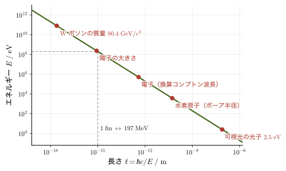
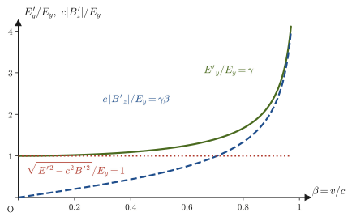
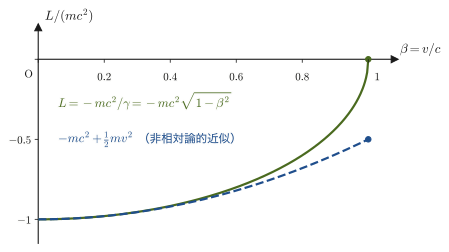

第58章自然単位系と電磁気学の4元形式 — 素粒子物理学への準備
素粒子物理学や相対論的量子力学の本を開くと，最初のページで 2 つの「見慣れない書き方」に出会う．1 つ目は，式のどこにも光速 $c$ やプランク定数 $\hbar$ が出てこないことである．$E^2=p^2+m^2$ のような式が平然と並び，質量も運動量もエネルギーも「$\mathrm{MeV}$」や「$\mathrm{GeV}$」で表される．これは間違いではなく，$c=\hbar=1$ とおく自然単位系という約束のおかげである．高校物理でも，原子の世界のエネルギーを $\mathrm{eV}$ で表し，質量を $\mathrm{u}$（原子質量単位）で測り，光子のエネルギーを $E=h\nu$ と書いた．自然単位系は，その発想をもう一歩だけ進めたものにすぎない．この章の前半では，なぜそれで困らないのか，どうすれば $\mathrm{m}$ や $\mathrm{s}$ や $\mathrm{kg}$ にもどせるのかを，実際の数値を使って練習する．
2 つ目は，電磁気学が添字つきの記号 $A^\mu,\ j^\mu,\ F^{\mu\nu},\ \partial_\mu F^{\mu\nu}=\mu_0 j^\nu$ で書かれていることである．第V部（第35〜42章）では，電場 $\bm E$，磁束密度 $\bm B$，電位 $\varphi$，ベクトルポテンシャル $\bm A$，電荷密度 $\rho$，電流密度 $\bm j$ を別々のものとして扱い，4 本のマクスウェル方程式を並べた．ところが，第54章のローレンツ変換と第57章の 4 元ベクトルを手にした今なら，これらは時間と空間が混ざり合うのに合わせて，ちょうど混ざり合うように，かつ自然にまとめ直せることがわかる．$\rho$ と $\bm j$ は 1 つの 4 元ベクトル，$\varphi$ と $\bm A$ も 1 つの 4 元ベクトル，そして $\bm E$ と $\bm B$ は，添字を 2 つもつ 1 つの量（テンソル．この章で定義する）の 6 つの成分になる．4 本のマクスウェル方程式は，たった 2 本の式に縮む．しかも，ある観測者から見て「電場だけ」のところが，別の観測者から見ると「電場と磁場の両方」になる理由が，そこから一目でわかる．この章の後半では，これを一歩ずつ導く．
歴史的には順序が逆である．マクスウェルの方程式（1860 年代）がガリレイ変換に対して形を保たないことが特殊相対性理論（1905 年）を生み，その後にミンコフスキーらが電磁気学を 4 次元の形で書き直した（第54章 54.2）．細かく見ると，ローレンツ（H. A. Lorentz）は 1904 年までに，マクスウェル方程式の形を保つ座標変換（のちに「ローレンツ変換」と呼ばれる）の式を求め，ポアンカレ（H. Poincaré）は 1905 年に，この変換がマクスウェル方程式の対称性をなすことを示した．アインシュタインは同じ 1905 年に，光速度不変と相対性原理だけからこの変換を導いた．つまり，特殊相対性理論はもともと電磁気学の要請から生まれたもので，電磁気学は相対論を「あらかじめ内包していた」理論なのである．最後に，自由粒子の相対論的ラグランジアン $L=-mc^2/\gamma$ を導き（第VI部との接続），$E^2=p^2c^2+m^2c^4$ から量子力学と結びつく先の世界を一言だけ予告して，本書全体をふりかえる．
- 自然単位系 $c=\hbar=1$（と $k_{\mathrm B}=1$）の考え方．$\mathrm{eV},\ \mathrm{MeV},\ \mathrm{GeV}$ で質量・運動量・エネルギー・長さ・時間を表す方法と，$\hbar c=197.327\ \mathrm{MeV\,fm}$ を使った換算，次元解析による単位の復元
- 4 元勾配 $\partial_\mu$ とダランベルシアン $\Box$．波動方程式 $\Box\psi=0$ がローレンツ変換で形を変えないこと（ガリレイ変換ではそうならなかったことの解決）
- 4 元電流 $j^\mu=(c\rho,\bm j)$ と，電荷保存則の共変な形 $\partial_\mu j^\mu=0$
- ベクトルポテンシャル $\bm A$ を復習し，$\bm E=-\nabla\varphi-\partial_t\bm A,\ \bm B=\rot\bm A$ から 4 元ポテンシャル $A^\mu=(\varphi/c,\bm A)$ へ．ゲージ変換の自由度
- 場のテンソル $F^{\mu\nu}=\partial^\mu A^\nu-\partial^\nu A^\mu$ の成分（$\bm E,\bm B$ の 6 成分）と，2 つの不変量 $\bm E\cdot\bm B$，$E^2-c^2B^2$
- マクスウェル方程式の共変形 $\partial_\mu F^{\mu\nu}=\mu_0j^\nu$ と斉次方程式，ローレンツ条件 $\partial_\mu A^\mu=0$ のもとでの $\Box A^\mu=\mu_0j^\mu$
- 電場・磁場のローレンツ変換．動く観測者から見て電場が磁場に，磁場が電場に「混ざる」こと（電流を流す導線のそばの電荷の例）
- 共変なローレンツ力 $\dd p^\mu/\dd\tau=qF^{\mu\nu}u_\nu$ と，相対論的なサイクロトロン運動
- 自由粒子の相対論的ラグランジアン $L=-mc^2/\gamma$，$\bm p=\gamma m\bm v$，$H=\gamma mc^2$（第VI部への接続）
- $E^2=p^2c^2+m^2c^4$ から相対論的量子力学への予告と，本書全体（第I〜VIII部）のふりかえり
関連するノート：望月泰英『物理学ノート 特殊相対性理論』 pp. 1–9．
58.1 自然単位系 $c=\hbar=1$ — 単位を消して式を見やすくする
58.1.1 高校の「eV」から出発する
高校物理の原子の単元では，エネルギーの単位にジュール $\mathrm{J}$ ではなく電子ボルト（electronvolt）$\mathrm{eV}$ を使った．電子 1 個（電気量の大きさ $e=1.602\,176\,634\times10^{-19}\ \mathrm{C}$）を電位差 $1\ \mathrm{V}$ で加速したときに電子が得る運動エネルギーが $1\ \mathrm{eV}$ で，
$$ 1\ \mathrm{eV}=1.602\,176\,634\times10^{-19}\ \mathrm{J} $$である（$W=qV$ から．第36章 36.1）．水素原子の電子を原子から引きはがすのに必要なエネルギーは $13.6\ \mathrm{eV}$ だから，原子の世界では $\mathrm{eV}$ が「ちょうどよい大きさ」の単位である．原子核の世界のエネルギーは $\mathrm{MeV}$（メガ電子ボルト，$10^6\ \mathrm{eV}$），素粒子の世界のエネルギーは $\mathrm{GeV}$（ギガ電子ボルト，$10^9\ \mathrm{eV}$）や $\mathrm{TeV}$（テラ電子ボルト，$10^{12}\ \mathrm{eV}$）で表す．
次に，第57章で学んだ $E=mc^2$（静止エネルギー）を思い出そう．質量 $m$ の粒子は，止まっていても $mc^2$ のエネルギーをもつ．そこで質量も $\mathrm{eV}$ を使って「$\mathrm{eV}/c^2$」で測ることができる．電子の質量は $m_{\mathrm e}c^2=0.511\ \mathrm{MeV}$，つまり $m_{\mathrm e}=0.511\ \mathrm{MeV}/c^2$ であり，陽子の質量は $m_{\mathrm p}=938.272\ \mathrm{MeV}/c^2\approx0.938\ \mathrm{GeV}/c^2$ である．運動量も同様に，$E=pc$（質量ゼロの粒子）や $E^2=p^2c^2+m^2c^4$ から，$\mathrm{eV}/c$ という単位で測るのが便利になる（第57章 57.5）．こうして，質量・運動量・エネルギーはどれも $\mathrm{eV}$ に $c$ のべきをかけた単位で表せる．
そうであれば，毎回「$/c^2$」や「$/c$」を書くのは面倒である．「光の速さ $c$ を単位にして測る」と決めてしまい，$c=1$ とおいてしまえば，質量・運動量・エネルギーはすべて同じ $\mathrm{eV}$ で表せ，$E^2=p^2c^2+m^2c^4$ は $E^2=p^2+m^2$ になる．これが自然単位系の発想の第 1 歩である．
58.1.2 $c=1$ と $\hbar=1$ とおく
光の速さを $1$ とする単位は，実は天文学で昔から使われている．「1 光年」は，光が 1 年間に進む距離という，時間で決まる長さである．同じように，長さを「光が進むのにかかる時間」で測ることにすれば，長さと時間は同じ単位になる．真空中の光の速さは $c=299\,792\,458\ \mathrm{m/s}$（定義値）なので，光が $1\ \mathrm{m}$ 進むのにかかる時間は
$$ \frac{1\ \mathrm{m}}{c}=\frac{1}{299\,792\,458}\ \mathrm{s}=3.3356\ \mathrm{ns} $$である．$c=1$ とおくとは，「$1\ \mathrm{m}$ と $3.3356\ \mathrm{ns}$ を同じ長さの単位とみなす」ということである．すでに第VIII部では，時刻に $c$ をかけた $x^0=ct$ を「時間の座標」として使ってきた（第54章 54.5）．それは $c=1$ とおく考え方の，途中までの実践である．
もう 1 つ，プランク定数がある．光子（光の粒）のエネルギーは，振動数 $\nu$ と角振動数 $\omega=2\pi\nu$ を使って $E=h\nu=\hbar\omega$ と書ける（$\hbar\equiv h/(2\pi)$ は「エイチ・バー」と読み，換算プランク定数という．$h=6.626\,070\,15\times10^{-34}\ \mathrm{J\,s}$ は定義値）．$\hbar=1$ とおくと $E=\omega$，つまり「エネルギー」と「角振動数（時間の逆数）」が同じ単位になる．
定義58.1 自然単位系
光速 $c$ と換算プランク定数 $\hbar$ を，ともに $1$ とおく単位の約束を自然単位系（natural units）という：
$$ c=\hbar=1 $$さらに，熱を扱うときにはボルツマン定数も $k_{\mathrm B}=1$ とおく（温度をエネルギーの単位で測る）．
単位の数で考えるとわかりやすい．SI 単位系では，力学の量は長さ（m）・質量（kg）・時間（s）の 3 つの独立な単位で表される．$c=1$ とおくと長さと時間が同じ単位になり，独立な単位は 2 つに減る．さらに $\hbar=1$ とおくと，$\hbar$ の単位は $\mathrm{J\,s}=\mathrm{kg\,m^2/s}$ だから，質量（＝エネルギー）と時間が結ばれ，独立な単位は 1 つ——エネルギー——だけになる（図58.1）．
| 物理量 | SI 単位 | 自然単位系の次元 | よく使う単位 |
|---|---|---|---|
| 質量 $m$ | $\mathrm{kg}$ | エネルギー1 | $\mathrm{MeV},\ \mathrm{GeV}$ |
| 運動量 $p$ | $\mathrm{kg\,m/s}$ | エネルギー1 | $\mathrm{MeV},\ \mathrm{GeV}$ |
| エネルギー $E$ | $\mathrm{J}$ | エネルギー1 | $\mathrm{eV},\ \mathrm{MeV},\ \mathrm{GeV}$ |
| 温度 $T$（$k_{\mathrm B}T$） | $\mathrm{K}$ | エネルギー1 | $\mathrm{eV},\ \mathrm{MeV}$ |
| 角振動数 $\omega$，波数 $k$ | $\mathrm{s^{-1}},\ \mathrm{m^{-1}}$ | エネルギー1 | $\mathrm{MeV},\ \mathrm{fm^{-1}}$ |
| 長さ $\ell$ | $\mathrm{m}$ | エネルギー−1 | $\mathrm{MeV^{-1}},\ \mathrm{GeV^{-1}}$（$\mathrm{fm}$ に換算） |
| 時間 $t$ | $\mathrm{s}$ | エネルギー−1 | $\mathrm{MeV^{-1}},\ \mathrm{GeV^{-1}}$（$\mathrm{s}$ に換算） |
| 電荷 $q$ | $\mathrm{C}$ | 無次元 | $e=\sqrt{4\pi\alpha}\approx0.303$ |
| 電場 $E$，磁束密度 $B$ | $\mathrm{V/m},\ \mathrm{T}$ | エネルギー2 | $\mathrm{GeV}^2$ |
| 電位 $\varphi$，ベクトルポテンシャル $A$ | $\mathrm{V},\ \mathrm{T\,m}$ | エネルギー1 | $\mathrm{MeV},\ \mathrm{GeV}$ |
| 電磁場のエネルギー密度 $\frac12(E^2+B^2)$ | $\mathrm{J/m^3}$ | エネルギー4 | $\mathrm{GeV}^4$ |
| 速さ $v$，作用 $S$ | $\mathrm{m/s},\ \mathrm{J\,s}$ | 無次元 | $\beta=v/c$ など |
イメージ：単位を消しても「物理」は消えない
自然単位系は，「$c=1$ だから光は速さ $1$ で進む」と物理法則を変えているのではない．「長さを測る物差し」と「時間を測る時計」を，光の速さで結びつけて 1 つにしただけである．第57章で学んだ $E=mc^2$ が，質量とエネルギーが同じものの別の呼び名であること（質量とエネルギーの等価性）を示していたように，$c=1$ は「空間と時間は同じものの別の呼び名」というローレンツ変換の教えを，単位の約束の形にしたものといえる．同様に，量子力学の関係 $E=\hbar\omega$ は「エネルギーと振動数は比例する」と述べているので，$\hbar=1$ とおけばエネルギーと振動数を同じ単位にできる．
考察：自然単位系を使う前と使った後
「単位を消す」ことに，はじめは違和感があるかもしれない．そこで，同じ内容の式を，使う前（$c,\hbar$ を残した SI の形）と使った後で並べてみよう．どの式でも定数 $c,\hbar$ が消え，物理量どうしの大小関係が直接読み取れるようになる．
| 内容 | 使う前（$c,\hbar$ あり） | 使った後（$c=\hbar=1$） |
|---|---|---|
| エネルギー・運動量・質量の関係 | $E^2=p^2c^2+m^2c^4$ | $E^2=p^2+m^2$ |
| 電子の換算コンプトン波長（長さ） | $\hbar/(m_{\mathrm e}c)$ | $1/m_{\mathrm e}$ |
| 水素原子のエネルギー準位（微細構造定数 $\alpha$） | $E_n=-\dfrac{\alpha^2m_{\mathrm e}c^2}{2n^2}$ | $E_n=-\dfrac{\alpha^2m_{\mathrm e}}{2n^2}$ |
| 質量をもつ波の方程式（クライン＝ゴルドン方程式，58.10） | $\left(\Box+\dfrac{m^2c^2}{\hbar^2}\right)\psi=0$ | $(\Box+m^2)\psi=0$ |
（水素原子の準位の式は，原子の量子論で知られている結果で，本書では導かない．）たとえば右の列の水素原子の式で，$n=1$ とすると $E_1=-\alpha^2m_{\mathrm e}/2=-(1/137.036)^2\times0.511\times10^{6}\ \mathrm{eV}/2=-13.6\ \mathrm{eV}$ と，高校で知った値が出る．同時に，「水素原子の束縛エネルギーは，電子の静止エネルギーの $\alpha^2/2\approx2.7\times10^{-5}$ 倍にすぎない」という大小関係が，式の形から一目でわかる．SI の式では，$c$ や $\hbar$ の数値に隠れて，このような見通しは得にくい．
58.1.3 $\hbar c=197.327\ \mathrm{MeV\,fm}$ による換算
自然単位系で計算した結果は，最後に $\mathrm{m}$，$\mathrm{s}$，$\mathrm{kg}$ にもどして実験と比べたい．そのときの橋渡しをするのが，$\hbar$ と $c$ の積 $\hbar c$ である．$\hbar=h/(2\pi)=1.054\,571\,817\times10^{-34}\ \mathrm{J\,s}$，$c=299\,792\,458\ \mathrm{m/s}$ なので，
\begin{equation} \hbar c=3.161\,527\times10^{-26}\ \mathrm{J\,m}=\frac{3.161\,527\times10^{-26}}{1.602\,177\times10^{-19}}\ \mathrm{eV\,m}=1.973\,270\times10^{-7}\ \mathrm{eV\,m} \label{eq:58-hbarc-eVm} \end{equation}である．原子核の世界の長さの単位は $1\ \mathrm{fm}=10^{-15}\ \mathrm{m}$（フェムトメートル．「フェルミ」ともいう．陽子の半径がおよそ $0.84\ \mathrm{fm}$）で，エネルギーの単位は $\mathrm{MeV}$ だから，式 \eqref{eq:58-hbarc-eVm} を書き直すと，
（$1.973\,270\times10^{-7}\ \mathrm{eV\,m}=1.973\,270\times10^{-7}\times10^{-6}\ \mathrm{MeV}\times10^{15}\ \mathrm{fm}=197.327\ \mathrm{MeV\,fm}$．）自然単位系では $\hbar c=1$ なので，式 \eqref{eq:58-hbarc} は「$1=197.327\ \mathrm{MeV\,fm}$」，つまり
$$ 1\ \mathrm{fm}^{-1}\ \Longleftrightarrow\ 197.327\ \mathrm{MeV},\qquad 1\ \mathrm{MeV}^{-1}\ \Longleftrightarrow\ 197.327\ \mathrm{fm} $$という換算表を与える．長さ $\ell$ とエネルギー $E$ は，$E=\hbar c/\ell$ の関係で結ばれている．短い長さほど大きなエネルギーに対応する——これが，素粒子物理学で「高いエネルギーで小さな世界を調べる」といわれる理由の 1 つである（図58.2）．ここでの長さとエネルギーの対応は，粒子を長さ $\ell$ 程度の領域に閉じ込めたときの運動量の大きさがおよそ $\hbar/\ell$ になる，という量子力学の不確定性関係から自然に出てくるものである（本書では量子力学は扱わない）．

図58.2 の点の読み方に注意しよう．(i) 可視光の点は，エネルギー $2.5\ \mathrm{eV}$ の光子（波長 $\lambda=2\pi\hbar c/E\approx500\ \mathrm{nm}$）に対して $\ell=\hbar c/E\approx79\ \mathrm{nm}$ で，これは波長の $1/(2\pi)$ である（例題58.2(c) で $E=2\pi\hbar c/\lambda$ と書いたことに対応する）．(ii) 水素原子の点は，ボーア半径 $a_0=\hbar/(\alpha m_{\mathrm e}c)$ に対する $\hbar c/a_0=\alpha m_{\mathrm e}c^2\approx3.7\ \mathrm{keV}$ の位置にある．水素原子の電離エネルギー $13.6\ \mathrm{eV}=\alpha^2m_{\mathrm e}c^2/2$ とは別の量で，その $2/\alpha\approx274$ 倍である．「大きさ $\ell$ の領域に閉じ込められた粒子の典型的なエネルギー」と「その領域内の束縛エネルギー」は，同じではない．
| 自然単位系 | SI での値 | どうやって出すか |
|---|---|---|
| $1\ \mathrm{GeV}$（エネルギー） | $1.602\,177\times10^{-10}\ \mathrm{J}$ | $10^9\times e\ [\mathrm{C}]\times1\ \mathrm{V}$ |
| $1\ \mathrm{GeV}$（質量） | $1.782\,662\times10^{-27}\ \mathrm{kg}$ | $1\ \mathrm{GeV}/c^2$ |
| $1\ \mathrm{GeV}$（運動量） | $5.344\,286\times10^{-19}\ \mathrm{kg\,m/s}$ | $1\ \mathrm{GeV}/c$ |
| $1\ \mathrm{GeV}^{-1}$（長さ） | $0.197\,327\ \mathrm{fm}=1.973\,27\times10^{-16}\ \mathrm{m}$ | $\hbar c/(1\ \mathrm{GeV})$ |
| $1\ \mathrm{GeV}^{-1}$（時間） | $6.582\,120\times10^{-25}\ \mathrm{s}$ | $\hbar/(1\ \mathrm{GeV})$ |
| $1\ \mathrm{eV}$（温度） | $1.160\,452\times10^{4}\ \mathrm{K}$ | $1\ \mathrm{eV}/k_{\mathrm B}$ |
| $1\ \mathrm{GeV}^{-2}$（断面積） | $3.894\times10^{-32}\ \mathrm{m^2}=0.3894\ \mathrm{mb}$ | $(\hbar c)^2/(1\ \mathrm{GeV})^2$（$1\ \mathrm{mb}=10^{-31}\ \mathrm{m^2}$） |
例題58.1 陽子の質量を kg で表す
素粒子物理学の表では，陽子の質量が $m_{\mathrm p}=938.272\ \mathrm{MeV}$ と書かれている．これを $\mathrm{kg}$ で表せ．$1\ \mathrm{eV}=1.602\,177\times10^{-19}\ \mathrm{J}$，$c=2.997\,925\times10^{8}\ \mathrm{m/s}$ を使え．
解答 自然単位系の「$938.272\ \mathrm{MeV}$」は，$c$ を復元すると質量が $m_{\mathrm p}=938.272\ \mathrm{MeV}/c^2$（すなわち静止エネルギー $m_{\mathrm p}c^2=938.272\ \mathrm{MeV}$）の意味である．まず $\mathrm{J}$ にすると，
$$ m_{\mathrm p}c^2=938.272\times10^6\times1.602\,177\times10^{-19}\ \mathrm{J}=1.503\,278\times10^{-10}\ \mathrm{J} $$である．これを $c^2=(2.997\,925\times10^{8}\ \mathrm{m/s})^2=8.987\,552\times10^{16}\ \mathrm{m^2/s^2}$ で割ると，
$$ m_{\mathrm p}=\frac{1.503\,278\times10^{-10}\ \mathrm{J}}{8.987\,552\times10^{16}\ \mathrm{m^2/s^2}}=1.672\,62\times10^{-27}\ \mathrm{kg} $$（$\mathrm{J}=\mathrm{kg\,m^2/s^2}$ だから，単位は $\mathrm{kg}$ になる）．これは陽子の質量 $1.672\,622\times10^{-27}\ \mathrm{kg}$ と一致する．また，1 つの換算として，$1\ \mathrm{MeV}/c^2=1.782\,662\times10^{-30}\ \mathrm{kg}$ を覚えておくと，$938.272\times1.782\,662\times10^{-30}=1.67262\times10^{-27}\ \mathrm{kg}$ とすぐに出る．
例題58.2 長さとエネルギーの換算
(a) $1\ \mathrm{fm}$ に対応するエネルギーを求めよ．(b) 電子の質量 $m_{\mathrm e}=0.511\ \mathrm{MeV}$ の逆数に対応する長さ $\hbar/(m_{\mathrm e}c)$（電子の換算コンプトン波長）を $\mathrm{fm}$ で求めよ．(c) 波長 $500\ \mathrm{nm}$ の可視光の光子のエネルギーを，$\hbar c=197.327\ \mathrm{MeV\,fm}$ から求めよ．
解答 (a) $E=\hbar c/\ell$ に $\ell=1\ \mathrm{fm}$ を入れると，$E=197.327\ \mathrm{MeV\,fm}/(1\ \mathrm{fm})=197.327\ \mathrm{MeV}$．
(b) 自然単位系では，質量 $m_{\mathrm e}$ に対応する長さは $1/m_{\mathrm e}$ である．$c$ と $\hbar$ を復元すると $\hbar/(m_{\mathrm e}c)=\hbar c/(m_{\mathrm e}c^2)$ なので，
$$ \frac{\hbar c}{m_{\mathrm e}c^2}=\frac{197.327\ \mathrm{MeV\,fm}}{0.511\ \mathrm{MeV}}=386\ \mathrm{fm}=3.86\times10^{-13}\ \mathrm{m} $$（$197.327/0.511=386.2$）．これは，原子（$\sim10^{-10}\ \mathrm{m}$）よりずっと小さいが，陽子の半径（$\sim1\ \mathrm{fm}$）よりは大きい．
(c) 光子の波長 $\lambda$ と，角波数 $k=2\pi/\lambda$ を使うと，光子のエネルギーは $E=\hbar\omega=\hbar ck=2\pi\hbar c/\lambda$ である．$\lambda=500\ \mathrm{nm}=5.00\times10^{8}\ \mathrm{fm}$（$1\ \mathrm{nm}=10^{-9}\ \mathrm{m}=10^6\ \mathrm{fm}$）を代入して，
$$ E=\frac{2\pi\times197.327\ \mathrm{MeV\,fm}}{5.00\times10^{8}\ \mathrm{fm}}=2.48\times10^{-6}\ \mathrm{MeV}=2.48\ \mathrm{eV} $$高校物理で学んだ，可視光の光子エネルギーが数 $\mathrm{eV}$ であることと一致する（$2\pi\times197.327=1239.84$ から $hc=1239.84\ \mathrm{eV\,nm}$ が出る）．なお，図58.2 の可視光の点は，この光子の換算波長 $\lambda/(2\pi)=79\ \mathrm{nm}$ に当たる．
58.1.4 単位をもとにもどす — 次元解析による復元
自然単位系の式から，$c$ と $\hbar$ をもとにもどす手順を確認しよう．原理は単純で，「物理の式は，どの項も同じ次元をもつ」（第1章 1.3の次元解析）という要請だけである．SI 単位では $[\hbar]=\mathrm{kg\,m^2/s}$，$[c]=\mathrm{m/s}$ なので，質量 $m$ が与えられれば，これらから次の量が作れる（$\mathrm{J}=\mathrm{kg\,m^2/s^2}$ を使う）：
$$ \underbrace{mc^2}_{\text{エネルギー}\ [\mathrm{J}]},\qquad \underbrace{mc}_{\text{運動量}\ [\mathrm{kg\,m/s}]},\qquad \underbrace{\frac{\hbar}{mc}}_{\text{長さ}\ [\mathrm{m}]},\qquad \underbrace{\frac{\hbar}{mc^2}}_{\text{時間}\ [\mathrm{s}]} $$（長さ：$\dfrac{\mathrm{kg\,m^2/s}}{\mathrm{kg}\cdot\mathrm{m/s}}=\mathrm{m}$，時間：$\dfrac{\mathrm{kg\,m^2/s}}{\mathrm{kg\,m^2/s^2}}=\mathrm{s}$．）
公式58.1 単位の復元の手順
自然単位系で求めた量 $X$ が，（エネルギー）$n$ の次元をもつとする（表58.1）．これを，SI 単位 $\mathrm{kg}^a\,\mathrm{m}^b\,\mathrm{s}^c$ をもつ量にもどすには，次の 3 段階を踏む．
- $X$ の値を，ジュール（$\mathrm J=\mathrm{kg\,m^2\,s^{-2}}$）を単位とする量 $X\ [\mathrm J^n]$ に直す（$1\ \mathrm{eV}=1.602\,177\times10^{-19}\ \mathrm J$）．
- $\hbar^xc^y$ をかけた量 $X_{\mathrm{SI}}=X\,\hbar^xc^y$ を考える．$\hbar=\mathrm{kg\,m^2\,s^{-1}}$，$c=\mathrm{m\,s^{-1}}$ なので，その単位は $\mathrm J^n\hbar^xc^y=\mathrm{kg}^{\,n+x}\,\mathrm{m}^{\,2n+2x+y}\,\mathrm{s}^{\,-2n-x-y}$ である．
- これを目標の $\mathrm{kg}^a\,\mathrm{m}^b\,\mathrm{s}^c$ と一致させる連立方程式 $$n+x=a,\qquad2n+2x+y=b,\qquad-2n-x-y=c$$ を解いて，$x,y$ を決める．未知数は 2 つ，式は 3 本あるので，余った 1 本は，$n$ を正しく見積もったかどうかの確認になる．
よく使う結果は次のとおり（べきは 3 本の式から出る）．質量（$n=1$，目標 $\mathrm{kg}$）：$x=0,\ y=-2$ で $m/c^2$．運動量（$n=1$，目標 $\mathrm{kg\,m/s}$）：$x=0,\ y=-1$ で $p/c$．長さ（$n=-1$，目標 $\mathrm m$）：$x=1,\ y=1$ で $\hbar c\,\ell$．時間（$n=-1$，目標 $\mathrm s$）：$x=1,\ y=0$ で $\hbar\,t$．断面積（$n=-2$，目標 $\mathrm{m^2}$）：$x=2,\ y=2$ で $(\hbar c)^2\sigma$．
式の記号を置き換えて復元するときは，逆の見方をする：自然単位系の式の $m$ は「$mc^2$ のことだった」（エネルギーとして復元），$p$ は「$pc$ のことだった」，長さ $\ell$ は「$\ell/(\hbar c)$ のことだった」，時間 $t$ は「$t/\hbar$ のことだった」．質量の値を $\mathrm{kg}$ で表すときには $m/c^2$，エネルギーとして表すときには $mc^2$ をとり，混同しないこと．
例題58.3 $E^2=p^2+m^2$ の計算と単位の復元
自然単位系（単位 $\mathrm{MeV}$）で，電子（$m=0.511$）が $p=2$ の運動量をもつとき，エネルギー $E$ を求めよ．さらに，$c$ を復元した式 $E^2=p^2c^2+m^2c^4$ を書いて，$E$，$p$ を SI 単位で表し，速さ $v/c$ を求めよ．
解答 $E^2=p^2+m^2$ に入れて，
$$ E=\sqrt{p^2+m^2}=\sqrt{2^2+0.511^2}\ \mathrm{MeV}=\sqrt{4+0.2611}\ \mathrm{MeV}=2.064\ \mathrm{MeV} $$復元する：$p\to pc$，$m\to mc^2$ とすると，$E^2=(pc)^2+(mc^2)^2$ となり，各項の次元はエネルギー2 にそろう．$p=2\ \mathrm{MeV}/c$，$m=0.511\ \mathrm{MeV}/c^2$ の意味だったことがわかる．SI 単位では，
$$ p=\frac{2\times10^{6}\times1.602\,177\times10^{-19}\ \mathrm{J}}{2.997\,925\times10^{8}\ \mathrm{m/s}}=1.069\times10^{-21}\ \mathrm{kg\,m/s},\qquad E=2.064\times10^{6}\times1.602\,177\times10^{-19}\ \mathrm{J}=3.307\times10^{-13}\ \mathrm{J} $$速さは，第57章の関係 $\bm p=E\bm v/c^2$（$v=pc^2/E$）から $v/c=pc/E=2/2.064=0.969$ となる．ローレンツ因子は $\gamma=E/(mc^2)=2.064/0.511=4.04$ である．（自然単位系では，$v=p/E$，$\gamma=E/m$ と，$c$ が消えた形で計算できる．）
例題58.4 べきの連立方程式で単位を復元する
次の自然単位系の量を，公式58.1 の手順で SI 単位にもどせ．(a) 散乱断面積 $\sigma=1\ \mathrm{GeV}^{-2}$ を $\mathrm{m^2}$ で．(b) 崩壊幅 $\Gamma=2.0\ \mathrm{GeV}$ の粒子の寿命 $\tau=1/\Gamma$ を $\mathrm s$ で．(c) 電子の質量 $m_{\mathrm e}=0.511\ \mathrm{MeV}$ を $\mathrm{kg}$ で．
解答 (a) $\sigma$ は $n=-2$，目標は $\mathrm{m^2}$，すなわち $(a,b,c)=(0,2,0)$ である．連立方程式は
$$ -2+x=0,\qquad-4+2x+y=2,\qquad4-x-y=0 $$で，1 本目から $x=2$，2 本目から $y=2+4-2x=2$，3 本目に代入すると $4-2-2=0$ で成り立つ（次元の確認）．よって $\sigma_{\mathrm{SI}}=\sigma\,(\hbar c)^2$，$1\ \mathrm{GeV}=1.602\,177\times10^{-10}\ \mathrm J$，$\hbar c=3.161\,527\times10^{-26}\ \mathrm{J\,m}$ を使って，
$$ \sigma_{\mathrm{SI}}=\left(\frac{3.161\,527\times10^{-26}\ \mathrm{J\,m}}{1.602\,177\times10^{-10}\ \mathrm J}\right)^2=(1.973\,27\times10^{-16}\ \mathrm m)^2=3.894\times10^{-32}\ \mathrm{m^2} $$（表58.2 の値に一致する）．
(b) $\tau=1/\Gamma$ は $n=-1$，目標は $\mathrm s$，すなわち $(a,b,c)=(0,0,1)$．連立方程式は $-1+x=0,\ -2+2x+y=0,\ 2-x-y=1$ で，$x=1$，$y=0$，3 本目は $2-1-0=1$ で成り立つ．よって $\tau=\hbar/\Gamma$ で，
$$ \tau=\frac{1.054\,572\times10^{-34}\ \mathrm{J\,s}}{2.0\times1.602\,177\times10^{-10}\ \mathrm J}=3.29\times10^{-25}\ \mathrm s $$(c) 質量は $n=1$，目標は $\mathrm{kg}$，すなわち $(a,b,c)=(1,0,0)$．$1+x=1$ から $x=0$，$2+0+y=0$ から $y=-2$，3 本目は $-2-0+2=0$ で成り立つ．よって $m_{\mathrm e}/c^2$ で，
$$ m_{\mathrm e}=\frac{0.511\times10^{6}\times1.602\,177\times10^{-19}\ \mathrm J}{(2.997\,925\times10^{8}\ \mathrm{m/s})^2}=9.109\times10^{-31}\ \mathrm{kg} $$となり，電子の質量 $9.109\times10^{-31}\ \mathrm{kg}$ に一致する．
58.1.5 $k_{\mathrm B}=1$ と，電磁気学の単位についての注意
熱力学・統計力学（第IV部・第VII部）で出てくるボルツマン定数 $k_{\mathrm B}=1.380\,649\times10^{-23}\ \mathrm{J/K}$ も 1 とおくと，温度 $T$ をエネルギーの単位で測れる．$k_{\mathrm B}=8.617\,333\times10^{-5}\ \mathrm{eV/K}$ なので，$1\ \mathrm{eV}$ は温度に直すと $1.160\,452\times10^{4}\ \mathrm{K}$ に対応する．
もう 1 つ，短命な粒子の「寿命」の扱いを準備しておく．非常に短い時間しか存在しない粒子では，寿命 $\tau$ が短いほど，粒子のエネルギー（質量）の値が $\Gamma\sim\hbar/\tau$ 程度ぼやける（量子力学の不確定性関係．本書では導かない）．このぼやけの幅 $\Gamma$ を崩壊幅（decay width）といい，$\Gamma$ が大きいほど粒子は早く崩壊する．平均寿命は $\tau=\hbar/\Gamma$ で，自然単位系では $\tau=1/\Gamma$ と書ける．
例題58.5 温度と寿命の換算
(a) 室温 $T=300\ \mathrm{K}$ のとき，$k_{\mathrm B}T$ は何 $\mathrm{eV}$ か．また，$1\ \mathrm{MeV}$ の熱エネルギーに対応する温度は何 $\mathrm{K}$ か．(b) ごく短時間だけ存在する不安定な粒子の崩壊幅が $\Gamma=150\ \mathrm{MeV}$ であるとき，平均寿命 $\tau=\hbar/\Gamma$ を求めよ．また，光がその時間に進む距離 $c\tau$ を $\mathrm{fm}$ で表せ．$\hbar=6.582\,120\times10^{-22}\ \mathrm{MeV\,s}$ を使え．
解答 (a) $k_{\mathrm B}T=8.617\,333\times10^{-5}\ \mathrm{eV/K}\times300\ \mathrm{K}=2.585\times10^{-2}\ \mathrm{eV}=25.9\ \mathrm{meV}$．逆に $1\ \mathrm{MeV}=10^6\ \mathrm{eV}$ に対しては，$T=10^6/(8.617\,333\times10^{-5})\ \mathrm{K}=1.160\,5\times10^{10}\ \mathrm{K}$（約 $116$ 億度）．
(b) $\tau=\hbar/\Gamma$ は，自然単位系の「$\tau=1/\Gamma$」に $\hbar$ を復元したものである（時間 $=\hbar\times$ エネルギー−1）．
$$ \tau=\frac{6.582\,120\times10^{-22}\ \mathrm{MeV\,s}}{150\ \mathrm{MeV}}=4.39\times10^{-24}\ \mathrm{s} $$光が進む距離は $c\tau=2.998\times10^{8}\times4.388\times10^{-24}\ \mathrm{m}=1.32\times10^{-15}\ \mathrm{m}=1.32\ \mathrm{fm}$ で，$\hbar c/\Gamma=197.327/150\ \mathrm{fm}=1.32\ \mathrm{fm}$ と一致する．寿命が $10^{-24}\ \mathrm{s}$ 程度と短くても，光の速さで進む間に陽子の大きさ程度の距離を進むだけの，原子核の世界の時間スケールである．
注意：電磁気学の単位系は 3 種類ある
自然単位系で電磁気学を書くときには，電荷の単位の約束がもう一段階必要になる．$c=1/\sqrt{\varepsilon_0\mu_0}$ なので $c=1$ とおくと $\varepsilon_0\mu_0=1$ となり，どちらか一方を $1$ にすれば他方も決まる．(i) $\varepsilon_0=1$（したがって $\mu_0=1$）とするヘヴィサイド＝ローレンツ単位系では，クーロンの法則が $F=q_1q_2/(4\pi r^2)$ となり，微細構造定数は $\alpha=e^2/(4\pi)\approx1/137.036$（すなわち $e=\sqrt{4\pi\alpha}=0.3028$）と書ける．素粒子物理学の教科書の多くがこれを使う．この単位系では，電荷 $e$ は無次元，電場 $E$ と磁束密度 $B$ は（エネルギー）2 の次元をもつ（表58.1）．電磁場のエネルギー密度 $\frac12(E^2+B^2)$ は（エネルギー）4 で，「エネルギー／体積 $=$ エネルギー $\times$ エネルギー3」と一致する．(ii) $4\pi\varepsilon_0=1$ とするガウス単位系では $\alpha=e^2$ となる．(iii) 本書のように SI のままにすることもできる．$\alpha=e^2/(4\pi\varepsilon_0\hbar c)$ は無次元数で，どの単位系でも同じ値 $1/137.036$ になるので，単位系の違いに迷ったときは $\alpha$ の値で確かめられる．本章の 58.2〜58.9 節は，第V部との対応を見やすくするために，$c,\varepsilon_0,\mu_0$ を省略せずに SI で書く．
58.2 4元勾配 $\partial_\mu$ とダランベルシアン $\Box$ — 波動方程式のローレンツ不変性
前の節では単位を整理した．ここからは，第V部の電磁気学を，ローレンツ変換に対して形が変わらない形（共変な形，covariant form）で書き直していく．電磁気学の方程式には，偏微分 $\partial/\partial t$，$\partial/\partial x$，…がたくさん現れる．そこで，これらの偏微分が，ローレンツ変換で座標を取り替えたときにどのように変換されるかを，まず調べておく．
第57章のおさらい：添字の約束と 4 元ベクトル
詳しくは第57章 57.1–57.3にあるが，この章で使う約束をまとめておく．
- 4 元位置 $x^\mu=(x^0,x^1,x^2,x^3)=(ct,\ x,\ y,\ z)$．ギリシャ文字の添字 $\mu,\nu,\dots$ は $0,1,2,3$ を動き，ラテン文字の添字 $i,j,k$ は空間成分 $1,2,3$ だけを動く．右肩の数字は「乗」ではなく成分の番号である．
- 計量 $g_{\mu\nu}=g^{\mu\nu}=\mathrm{diag}(1,-1,-1,-1)$．添字の上げ下げは $a_\mu=g_{\mu\nu}a^\nu$，すなわち $a_0=a^0,\ a_i=-a^i$（下付きの空間成分は符号が逆になる）．
- アインシュタインの縮約記法：同じ添字が上と下に 1 回ずつ現れたら，その添字について $0$ から $3$ までの和をとる．たとえば内積は $a\cdot b=a_\mu b^\mu=a^0b^0-\bm a\cdot\bm b$（$\bm a=(a^1,a^2,a^3)$）．内積 $a\cdot b$ はローレンツ変換で変わらない（ローレンツ不変，Lorentz scalar）．
- 同じ文字が上下に 1 回ずつ現れる添字（ダミー添字）は，和をとって消える．それに対して，式の両辺に同じ位置で 1 つずつ残る添字（自由添字）は，その添字の値ごとに 1 本ずつ式があることを表す．たとえば $\partial_\mu F^{\mu\nu}=\mu_0j^\nu$ は，$\mu$ について和をとり，$\nu=0,1,2,3$ の 4 本の式を表す．
- S から S′（$x$ 方向に速さ $v=\beta c$）への変換は $a'^\mu=\Lambda^\mu{}_\nu a^\nu$．具体的には $a'^0=\gamma(a^0-\beta a^1)$，$a'^1=\gamma(a^1-\beta a^0)$，$a'^2=a^2$，$a'^3=a^3$（第54章 54.7の行列 $\Lambda(\beta)$ に対応する）．逆変換は $\beta\to-\beta$：$a^0=\gamma(a'^0+\beta a'^1)$，$a^1=\gamma(a'^1+\beta a'^0)$．
58.2.1 4元勾配 $\partial_\mu$
スカラー場 $\psi(t,x,y,z)$（各点の値が 1 つの数で決まる場．たとえば温度や電位）の偏微分を，4 つの座標 $x^\mu=(ct,x,y,z)$ に関する偏微分として並べる．
定義58.2 4元勾配
座標 $x^\mu$ に関する偏微分を $\partial_\mu\equiv\dfrac{\partial}{\partial x^\mu}$ と書き（$\partial$ は「パーシャル」または「デル」と読む），これを成分とする組を4元勾配（4-gradient）という：
\begin{equation} \partial_\mu=\left(\pdiff{}{x^0},\ \pdiff{}{x^1},\ \pdiff{}{x^2},\ \pdiff{}{x^3}\right)=\left(\frac1c\pdiff{}{t},\ \pdiff{}{x},\ \pdiff{}{y},\ \pdiff{}{z}\right)=\left(\frac1c\pdiff{}{t},\ \nabla\right) \label{eq:58-partial-lower} \end{equation}添字を上げた $\partial^\mu=g^{\mu\nu}\partial_\nu$ の成分は，空間成分の符号が変わって $\partial^\mu=\left(\dfrac1c\pdiff{}{t},\ -\nabla\right)$ である．
$x^0=ct$ なので $\dfrac{\partial}{\partial x^0}=\dfrac1c\dfrac{\partial}{\partial t}$ である．第V部で使った $\nabla=(\partial_x,\partial_y,\partial_z)$（ナブラ）は，4 元勾配の空間成分そのものであり，4 元勾配は「時間微分も含めた勾配」だと思えばよい（大学数学 18.4）．以下，$\partial_t=\partial/\partial t$ と略記する．
では，$\partial_\mu$ はローレンツ変換でどのように変わるか．S′ の座標 $x'^\mu$ で書いた偏微分 $\partial'_\mu=\partial/\partial x'^\mu$ を，合成関数の偏微分（連鎖律．大学数学 第6章 6.4）で求める．$\psi$ を S の座標 $x^\nu$ の関数と見て，$x^\nu$ が $x'^\mu$ の関数であることに注意すると，
$$ \pdiff{\psi}{x'^\mu}=\sum_{\nu=0}^{3}\pdiff{x^\nu}{x'^\mu}\pdiff{\psi}{x^\nu} \qquad\text{すなわち}\qquad \partial'_\mu=\pdiff{x^\nu}{x'^\mu}\,\partial_\nu\quad(\text{縮約記法}) $$である．$x$ 方向の変換では，逆変換 $x^0=\gamma(x'^0+\beta x'^1)$，$x^1=\gamma(x'^1+\beta x'^0)$，$x^2=x'^2$，$x^3=x'^3$ から，$\partial x^0/\partial x'^0=\gamma$，$\partial x^1/\partial x'^0=\gamma\beta$，$\partial x^0/\partial x'^1=\gamma\beta$，$\partial x^1/\partial x'^1=\gamma$ となるので，
\begin{equation} \partial'_0=\gamma\,(\partial_0+\beta\,\partial_1),\qquad \partial'_1=\gamma\,(\beta\,\partial_0+\partial_1),\qquad \partial'_2=\partial_2,\qquad \partial'_3=\partial_3 \label{eq:58-partial-boost} \end{equation}である．これを，$a'^0=\gamma(a^0-\beta a^1)$，$a'^1=\gamma(a^1-\beta a^0)$ と比べてみよう．下付きの成分は $a_0=a^0,\ a_1=-a^1$ だから，$a'_0=\gamma(a_0+\beta a_1)$，$a'_1=\gamma(a_1+\beta a_0)$ となり，式 \eqref{eq:58-partial-boost} と同じ形である．つまり，$\partial_\mu$ は下付きの添字をもつ 4 元ベクトルとして変換する．一般には次のようにいえる（$(\Lambda^{-1})^\nu{}_\mu$ は $\Lambda$ の逆行列の成分）．
定理58.1 4元勾配の変換と 4 元発散
ローレンツ変換 $x'^\mu=\Lambda^\mu{}_\nu x^\nu$ のもとで，4 元勾配は $\partial'_\mu=(\Lambda^{-1})^\nu{}_\mu\,\partial_\nu$ と変換する．したがって，$a^\mu$ が 4 元ベクトルのとき，その4元発散 $\partial_\mu a^\mu=\partial_0a^0+\partial_1a^1+\partial_2a^2+\partial_3a^3$ はローレンツ不変である：$\partial'_\mu a'^\mu=\partial_\mu a^\mu$．
証明
変換が線形（$x^\nu=(\Lambda^{-1})^\nu{}_\mu x'^\mu$）なので，係数 $\partial x^\nu/\partial x'^\mu=(\Lambda^{-1})^\nu{}_\mu$ となり，連鎖律から $\partial'_\mu=(\Lambda^{-1})^\nu{}_\mu\partial_\nu$ が出る．すると，
$$ \partial'_\mu a'^\mu=(\Lambda^{-1})^\nu{}_\mu\,\partial_\nu\,\bigl(\Lambda^\mu{}_\rho a^\rho\bigr)=\bigl[(\Lambda^{-1})^\nu{}_\mu\Lambda^\mu{}_\rho\bigr]\partial_\nu a^\rho=\delta^\nu{}_\rho\,\partial_\nu a^\rho=\partial_\nu a^\nu $$（$\Lambda$ は定数なので微分の外に出せる．$\Lambda^{-1}\Lambda=1$ より $(\Lambda^{-1})^\nu{}_\mu\Lambda^\mu{}_\rho=\delta^\nu{}_\rho$，クロネッカーのデルタ）．成分で確かめると，式 \eqref{eq:58-partial-boost} と $a'^0=\gamma(a^0-\beta a^1)$，$a'^1=\gamma(a^1-\beta a^0)$ から
$$ \begin{aligned} \partial'_0a'^0+\partial'_1a'^1 &=\gamma^2\bigl[(\partial_0+\beta\partial_1)(a^0-\beta a^1)+(\beta\partial_0+\partial_1)(a^1-\beta a^0)\bigr]\\ &=\gamma^2\bigl[(1-\beta^2)\,\partial_0a^0+(1-\beta^2)\,\partial_1a^1+(-\beta+\beta)\,\partial_0a^1+(\beta-\beta)\,\partial_1a^0\bigr]\\ &=\gamma^2(1-\beta^2)\,(\partial_0a^0+\partial_1a^1)=\partial_0a^0+\partial_1a^1 \end{aligned} $$（$\gamma^2(1-\beta^2)=1$．$y,z$ 成分は変わらない）．
（証明終わり）
例題58.6 4元勾配の変換
S 系のある点で，スカラー場 $\psi$ の偏微分が $\partial_0\psi=5\ \mathrm{m^{-1}}$，$\partial_1\psi=3\ \mathrm{m^{-1}}$，$\partial_2\psi=\partial_3\psi=0$ であった．$\beta=0.6$ で $x$ 方向に動く S′ 系での $\partial'_0\psi,\ \partial'_1\psi$ を求め，$(\partial_0\psi)^2-(\partial_1\psi)^2$ が変わらないことを確かめよ．
解答 $\beta=0.6$ より $\gamma=1/\sqrt{1-0.36}=1.25$．式 \eqref{eq:58-partial-boost} に代入して，
$$ \partial'_0\psi=1.25\,(5+0.6\times3)=1.25\times6.8=8.5\ \mathrm{m^{-1}},\qquad \partial'_1\psi=1.25\,(0.6\times5+3)=1.25\times6=7.5\ \mathrm{m^{-1}} $$である．S 系で $(\partial_0\psi)^2-(\partial_1\psi)^2=25-9=16$，S′ 系で $(\partial'_0\psi)^2-(\partial'_1\psi)^2=72.25-56.25=16$（単位 $\mathrm{m^{-2}}$）と，一致する．これは，4 元勾配どうしの内積 $\partial_\mu\psi\,\partial^\mu\psi=(\partial_0\psi)^2-(\partial_1\psi)^2-(\partial_2\psi)^2-(\partial_3\psi)^2$ がローレンツ不変であることの 1 例である．
58.2.2 ダランベルシアン $\Box$
波の方程式に出てくる「時間 2 階微分 $-$ 空間 2 階微分」の組み合わせを，4 元勾配で書いてみよう．$\partial_\mu$ と $\partial^\mu$ の縮約（内積）を作ると，
\begin{equation} \partial_\mu\partial^\mu=\partial_0\partial^0+\partial_1\partial^1+\partial_2\partial^2+\partial_3\partial^3=\frac1{c^2}\pdiff{^2}{t^2}-\pdiff{^2}{x^2}-\pdiff{^2}{y^2}-\pdiff{^2}{z^2}=\frac1{c^2}\pdiff{^2}{t^2}-\nabla^2 \label{eq:58-box} \end{equation}となる（$\partial^i=-\partial_i$ だから空間成分に $-$ がつく．$\nabla^2=\nabla\cdot\nabla$ はラプラシアン，大学数学 19.3）．
定義58.3 ダランベルシアン
式 \eqref{eq:58-box} の演算子をダランベルシアン（d'Alembertian）といい，$\Box$ と書く：
$$ \Box\equiv\partial_\mu\partial^\mu=\frac1{c^2}\pdiff{^2}{t^2}-\nabla^2 $$（教科書によっては符号を逆にして $\Box=\nabla^2-\dfrac1{c^2}\partial_t^2$ と定義するので，他書を読むときには確かめること．本書は計量 $(+,-,-,-)$ に合わせて上の符号を使う．）
ダランベルシアンは，ラプラシアン $\nabla^2$ の「時空版」である．ラプラシアンが空間の回転（座標軸を回す変換）で形を変えないのと同じように，ダランベルシアンはローレンツ変換で形を変えない．
定理58.2 ダランベルシアンのローレンツ不変性
ローレンツ変換で座標を $x^\mu\to x'^\mu$ と取り替えても，$\Box'=\partial'_\mu\partial'^\mu=\partial_\mu\partial^\mu=\Box$ である．
証明
式 \eqref{eq:58-partial-boost} を使って，$\Box'=(\partial'_0)^2-(\partial'_1)^2-(\partial'_2)^2-(\partial'_3)^2$ を計算する．
$$ \begin{aligned} (\partial'_0)^2-(\partial'_1)^2&=\gamma^2\bigl[(\partial_0+\beta\partial_1)^2-(\beta\partial_0+\partial_1)^2\bigr]\\ &=\gamma^2\bigl[\partial_0^2+2\beta\partial_0\partial_1+\beta^2\partial_1^2-\beta^2\partial_0^2-2\beta\partial_0\partial_1-\partial_1^2\bigr]\\ &=\gamma^2(1-\beta^2)\,(\partial_0^2-\partial_1^2)=\partial_0^2-\partial_1^2 \end{aligned} $$（中央の交差項 $\pm2\beta\partial_0\partial_1$ が打ち消し合う．$\gamma^2(1-\beta^2)=1$）．$y,z$ の項は変わらない（$\partial'_2=\partial_2$，$\partial'_3=\partial_3$）ので，$\Box'=\partial_0^2-\partial_1^2-\partial_2^2-\partial_3^2=\Box$ である．
（証明終わり）
この定理が，光速度不変性と結びつく．真空中の波動方程式は，$\psi$ をスカラー場（あるいは電磁波の各成分）として
\begin{equation} \Box\psi=0\qquad\Longleftrightarrow\qquad\frac1{c^2}\pdiff{^2\psi}{t^2}=\nabla^2\psi \label{eq:58-wave} \end{equation}である（第11章 11.2，第42章 42.3）．ローレンツ変換で座標を取り替えると，定理58.2 より $\Box'\psi=0$，すなわち S′ 系でも $\dfrac1{c^2}\pdiff{^2\psi}{t'^2}=\nabla'^2\psi$ と，同じ形・同じ $c$ の波動方程式が成り立つ．どの慣性系でも光（電磁波）の速さが $c$ であることが，方程式の形から自動的に出てくるのである．
考察：ガリレイ変換では，なぜ形が変わってしまったのか
1 次元の場合に，ガリレイ変換 $x'=x-vt$，$t'=t$（第54章 54.2）で波動方程式を書き換えてみる．連鎖律から $\partial_x=\partial_{x'}$，$\partial_t=\partial_{t'}-v\,\partial_{x'}$ なので，
$$ \frac1{c^2}\partial_t^2-\partial_x^2=\frac1{c^2}\left(\partial_{t'}-v\partial_{x'}\right)^2-\partial_{x'}^2=\frac1{c^2}\partial_{t'}^2-\frac{2v}{c^2}\partial_{t'}\partial_{x'}-\left(1-\frac{v^2}{c^2}\right)\partial_{x'}^2 $$となり，交差項 $\partial_{t'}\partial_{x'}$ が現れ，$\partial_{x'}^2$ の係数も $1-v^2/c^2$ に変わる．つまり S′ 系での波の速さは $c$ ではなくなる（$x'$ 方向に $c-v$ と $c+v$）．ローレンツ変換では，$\partial_0$ と $\partial_1$ がちょうど式 \eqref{eq:58-partial-boost} のように混ざり，交差項が打ち消し合ってこの困難が解消する．時間の座標と空間の座標が「対称に」混ざるのがポイントである．
58.2.3 平面波と 4 元波数ベクトル
波動方程式の最も基本的な解は平面波である．S 系で，角振動数 $\omega$，波数ベクトル $\bm k$ の平面波を $\psi=\cos(\omega t-\bm k\cdot\bm x)$ と書く（第II部の約束のとおり，位相は $\omega t-kx$ の形にとる．第11章 11.3）．これに，$\omega/c$ と $\bm k$ を並べた 4 つの成分
\begin{equation} k^\mu=\left(\frac{\omega}{c},\ \bm k\right)=(k^0,k^1,k^2,k^3) \label{eq:58-kmu} \end{equation}を4元波数ベクトル（wave 4-vector）という．すると位相は，4 元内積 $k\cdot x=k_\mu x^\mu=k^0x^0-\bm k\cdot\bm x=\omega t-\bm k\cdot\bm x$ で書ける：$\psi=\cos(k\cdot x)$．
位相 $\omega t-\bm k\cdot\bm x$ は，波の山や谷がどの時刻・どの場所にあるかを決める量であり，「山がある」という出来事は観測者によらない事実だから，位相の値はどの慣性系でも同じでなければならない（位相はローレンツ不変）．任意の 4 元位置 $x^\mu$ について $k_\mu x^\mu$ が不変なので，$k^\mu$ は $x^\mu$ と同じ変換をする 4 元ベクトルである．
平面波を波動方程式 \eqref{eq:58-wave} に代入する．計算を簡単にするため，複素数の形 $\psi=\exp(-ik\cdot x)=\exp[-i(\omega t-\bm k\cdot\bm x)]$ を使う（指数関数は，電気素量 $e$ との混同を避けて $\exp$ と書く．これは第II部の $\exp[i(kx-\omega t)]$ と同じ形で，位相の符号が $\omega t-kx$ の形と逆になっているが，実部 $\cos(\omega t-\bm k\cdot\bm x)=\cos(\bm k\cdot\bm x-\omega t)$ は同じである．波動方程式は $\psi$ について線形なので，実部・虚部のそれぞれがまた解になる）．$\partial_\mu\exp(-ik_\nu x^\nu)=-ik_\mu\exp(-ik\cdot x)$ だから，
$$ \Box\exp(-ik\cdot x)=\partial_\mu\partial^\mu\exp(-ik\cdot x)=(-ik_\mu)(-ik^\mu)\exp(-ik\cdot x)=-k_\mu k^\mu\exp(-ik\cdot x) $$である．よって $\Box\psi=0$ となる条件は，$k_\mu k^\mu=0$，すなわち
$$ k_\mu k^\mu=\frac{\omega^2}{c^2}-\bm k^2=0\qquad\Longleftrightarrow\qquad\omega=c\,\abs{\bm k} $$である（第42章 42.4の分散関係 $\omega=ck$）．4 元波数ベクトルの「長さ」がゼロ（光的，light-like または null）であることが，波が光速で進むことを表す．
補足：光子の 4 元運動量は $\hbar k^\mu$
量子力学では，光子のエネルギーと運動量は $E=\hbar\omega,\ \bm p=\hbar\bm k$ である．第57章の 4 元運動量 $p^\mu=(E/c,\bm p)$ と比べると，$p^\mu=\hbar k^\mu$ となり，質量ゼロの粒子の条件 $p_\mu p^\mu=0$（第57章 57.5）は $k_\mu k^\mu=0$ とちょうど対応する．自然単位系 $\hbar=1$ では，$p^\mu=k^\mu$ とすら書ける．粒子の 4 元運動量と波の 4 元波数ベクトルが同一視される，という自然単位系の見通しのよさの一例である．
例題58.7 4元波数ベクトルと相対論的ドップラー効果
$x$ 方向に進む平面波（光）の振動数が，S 系で $f=5.0\times10^{14}\ \mathrm{Hz}$（可視光）であった．(a) $k^\mu$ の成分を書き，$k_\mu k^\mu=0$ を確かめよ．(b) 光の進む向きに $\beta=0.6$ で動く S′ 系で観測される振動数 $f'$ を，$k'^\mu=\Lambda^\mu{}_\nu k^\nu$ から求めよ．(c) 光源に向かって $\beta=0.6$ で近づく観測者（S′ の速度が $-x$ 向き）が観測する振動数 $f''$ を求めよ．
解答 (a) $x$ 方向に進む光では $\bm k=(\omega/c,0,0)$ なので $k^\mu=(\omega/c,\ \omega/c,\ 0,\ 0)$．$k_\mu k^\mu=(\omega/c)^2-(\omega/c)^2=0$．
(b) $k'^0=\gamma(k^0-\beta k^1)=\gamma(1-\beta)\,\omega/c$ で，$k'^0=\omega'/c$ だから，$\omega'=\gamma(1-\beta)\omega$ である．$\gamma(1-\beta)=\dfrac{1-\beta}{\sqrt{(1-\beta)(1+\beta)}}=\sqrt{\dfrac{1-\beta}{1+\beta}}$ を使って，
$$ f'=\sqrt{\frac{1-\beta}{1+\beta}}\,f=\sqrt{\frac{0.4}{1.6}}\times5.0\times10^{14}\ \mathrm{Hz}=0.5\times5.0\times10^{14}\ \mathrm{Hz}=2.5\times10^{14}\ \mathrm{Hz} $$となる（光の進む向きに逃げる観測者には，振動数が下がって赤方偏移して見える．可視光が赤外線になる）．なお $k'^1=\gamma(k^1-\beta k^0)=\gamma(1-\beta)\omega/c=k'^0$ で，S′ でも $k'_\mu k'^\mu=0$ が保たれる．
(c) 速度が $-\beta$（$\beta=0.6$）の変換なので，$\beta\to-\beta$ として
$$ f''=\sqrt{\frac{1+\beta}{1-\beta}}\,f=\sqrt{\frac{1.6}{0.4}}\times5.0\times10^{14}\ \mathrm{Hz}=2\times5.0\times10^{14}\ \mathrm{Hz}=1.0\times10^{15}\ \mathrm{Hz} $$（青方偏移．可視光が紫外線になる）．これは第55章 55.4で導いた相対論的ドップラー効果の式と同じである．ここではローレンツ変換の式を 4 元波数ベクトルに 1 回かけるだけで導けた．
58.3 4元電流と電荷保存則
電磁場の源は電荷と電流である．第V部では，電荷密度 $\rho\ [\mathrm{C/m^3}]$（単位体積あたりの電気量）と，電流密度 $\bm j\ [\mathrm{A/m^2}]$（単位面積を単位時間に通り抜ける電気量．向きは電荷の流れの向き）を別々の量として扱った（第37章 37.1–37.2）．しかし，動いている観測者から見ると，止まっていた電荷は動いて「電流」になり，電流を流していた導線は「電荷」をもって見えるかもしれない．$\rho$ と $\bm j$ は，時間と空間のように混ざり合うはずである．どのように混ざるかを調べよう．
58.3.1 電荷密度と電流密度はなぜ 1 組にまとまるのか
電荷をもつ粒子の集まり（電子ビームでも，金属の中の電子でもよい）が，一様な速度 $\bm v$ で動いているとする．この粒子の集まりと一緒に動く観測者（静止系）から見た電荷密度を $\rho_0$ とする．静止系では電荷は止まっているので，電流はない．
実験室系（この集まりが速度 $\bm v$ で動いて見える系）では，何が起こるだろうか．ここで 2 つのことを使う．(i) 電荷はローレンツ不変である，つまり粒子の電気量は，粒子がどんな速さで動いていても変わらない（電荷が速さによらないことは，原子や分子の電気的中性を精密に調べる実験と，加速器の中で運動する荷電粒子の解析の，どちらとも矛盾しない．たとえば，原子の内部で電子や陽子の速さはさまざまに違うが，原子全体が電気的に中性であるという観測は，電子と陽子の電気量の大きさが運動によらず等しいことを支持している）．(ii) 動いている物体の運動方向の長さは $1/\gamma$ に縮む（ローレンツ収縮，第55章 55.1）ので，同じ数の粒子が入る体積は静止系の $1/\gamma$ になる．電気量が変わらずに体積が $1/\gamma$ になるのだから，電荷密度は $\gamma$ 倍になる：
$$ \rho=\gamma\rho_0 $$電流密度は，電荷密度に速度をかけたもの（第37章）だから，$\bm j=\rho\bm v=\gamma\rho_0\bm v$ である．そこで，$c\rho$ と $\bm j$ を 4 つの成分として並べてみると，
$$ (c\rho,\ \bm j)=\rho_0\,\bigl(\gamma c,\ \gamma\bm v\bigr)=\rho_0\,u^\mu $$となる．$u^\mu=\gamma(c,\bm v)$ は4元速度である（第57章 57.4）．$\rho_0$ はローレンツ不変な量（静止系での電荷密度）だから，$\rho_0u^\mu$ は 4 元ベクトルとして変換する．
定義58.4 4元電流
電荷密度 $\rho$ と電流密度 $\bm j$ をまとめた
\begin{equation} j^\mu=(c\rho,\ \bm j)=(c\rho,\ j_x,\ j_y,\ j_z) \label{eq:58-jmu} \end{equation}を4元電流（4-current）または 4 元電流密度という．静止系での電荷密度を $\rho_0$ とすると，$j^\mu=\rho_0u^\mu$ である．単位は $c\rho\ [\mathrm{m/s}\cdot\mathrm{C/m^3}=\mathrm{A/m^2}]$ で，$\bm j$ と同じ次元にそろっている．
$j^\mu$ が 4 元ベクトルなので，$x$ 方向に速さ $v=\beta c$ で動く S′ 系での電荷密度と電流密度は，第57章の変換則 $j'^0=\gamma(j^0-\beta j^1)$，$j'^1=\gamma(j^1-\beta j^0)$，$j'^2=j^2$，$j'^3=j^3$ から，
\begin{equation} c\rho'=\gamma\bigl(c\rho-\beta j_x\bigr),\qquad j'_x=\gamma\bigl(j_x-\beta c\rho\bigr),\qquad j'_y=j_y,\qquad j'_z=j_z \label{eq:58-jtrans} \end{equation}と求まる．たとえば S 系で電気的に中性な導線（$\rho=0$）に電流 $j_x\neq0$ が流れているとき，S′ 系では $\rho'=-\gamma\beta j_x/c\neq0$，つまり導線が帯電して見える．この事実が，磁場が「電場の相対論的な顔」であることの本質になる（58.7 節）．
イメージ：$\rho$ と $\bm j$ は「同じものの時間成分と空間成分」
4 元位置 $x^\mu=(ct,\bm x)$ の時間成分 $ct$ と空間成分 $\bm x$ が座標変換で混ざるように，電荷密度（の $c$ 倍）と電流密度も混ざる．どちらが「電荷」でどちらが「電流」かは，観測者の運動状態で変わる．電荷が「流れる」ことなしに，電流だけがあることも，電流なしに電荷だけがあることも，観測者によっては別々の顔で見えるだけである．
58.3.2 電荷保存則の共変形
電荷保存則（連続の方程式，第37章 37.2）は，ある領域の電気量の増加が，その境界から流れ込んだ電流に等しいことを表す：
\begin{equation} \pdiff{\rho}{t}+\nabla\cdot\bm j=0 \label{eq:58-continuity} \end{equation}4 元電流と 4 元勾配を使うと，左辺は $\partial_\mu j^\mu$ そのものである．実際，$\partial_0j^0=\dfrac1c\pdiff{(c\rho)}{t}=\pdiff{\rho}{t}$，$\partial_ij^i=\pdiff{j_x}{x}+\pdiff{j_y}{y}+\pdiff{j_z}{z}=\nabla\cdot\bm j$ だから，
となる．定理58.1 より，4 元ベクトルの 4 元発散はローレンツ不変なので，この式は「電荷が保存する」という法則が，どの慣性系でも同じ形で成り立つことを表している．$\partial_\mu j^\mu$ が 1 つの慣性系で 0 なら，すべての慣性系で 0 である．
例題58.8 電子ビームの電荷密度・電流密度と連続の方程式
(a) 速さ $0.6c$ で $+x$ 方向に進む電子ビームがある．ビームと一緒に動く観測者から見た電荷密度は $\rho_0=-1.0\times10^{-6}\ \mathrm{C/m^3}$ であった．実験室系での電荷密度 $\rho$ と電流密度 $j_x$，および不変量 $j_\mu j^\mu$ を求めよ．(b) 形を変えずに速さ $v$ で $+x$ 方向に動く電荷分布 $\rho(t,x)=\rho_{\mathrm a}(x-vt)$，$j_x=\rho v$ が連続の方程式を満たすことを示せ．
解答 (a) $\beta=0.6$ なので $\gamma=1/\sqrt{1-0.36}=1.25$．電荷密度は $\gamma$ 倍になり，
$$ \rho=\gamma\rho_0=1.25\times(-1.0\times10^{-6})\ \mathrm{C/m^3}=-1.25\times10^{-6}\ \mathrm{C/m^3} $$電流密度は $j_x=\rho v=-1.25\times10^{-6}\ \mathrm{C/m^3}\times0.6\times2.998\times10^{8}\ \mathrm{m/s}=-2.25\times10^{2}\ \mathrm{A/m^2}$（電子は $+x$ 向きに進むので電流は $-x$ 向き）．不変量は
$$ j_\mu j^\mu=(c\rho)^2-j_x^2=\bigl[(3.747\times10^{2})^2-(2.248\times10^{2})^2\bigr]\ \mathrm{A^2/m^4}=8.99\times10^{4}\ \mathrm{A^2/m^4} $$で，$(c\rho_0)^2=(2.998\times10^{8}\times1.0\times10^{-6})^2=8.99\times10^{4}\ \mathrm{A^2/m^4}$ と一致する（実際，$(\gamma c\rho_0)^2-(\gamma\beta c\rho_0)^2=\gamma^2(1-\beta^2)(c\rho_0)^2=(c\rho_0)^2$）．
(b) $\rho_{\mathrm a}'$ を $\rho_{\mathrm a}$ の引数についての導関数とすると，連鎖律から $\partial\rho/\partial t=-v\rho_{\mathrm a}'(x-vt)$，$\partial j_x/\partial x=v\rho_{\mathrm a}'(x-vt)$ となる．よって $\partial_\mu j^\mu=\dfrac1c\pdiff{(c\rho)}{t}+\pdiff{j_x}{x}=-v\rho_{\mathrm a}'+v\rho_{\mathrm a}'=0$．電荷の分布がそのまま流されていくだけなので，電荷が生まれたり消えたりしないことが，式の上でも確かめられた．
58.4 ベクトルポテンシャルと4元ポテンシャル
次に，電場 $\bm E$ と磁束密度 $\bm B$ の方へ進もう．いきなり $\bm E,\bm B$ を 4 元的にまとめようとしても，$\bm E$ と $\bm B$ は 3 成分ずつで，合わせて 6 成分あり，4 成分の 4 元ベクトルには収まらない．そこで，その手前にある「ポテンシャル」——電位 $\varphi$ とベクトルポテンシャル $\bm A$ ——を先に 4 元ベクトルにまとめ，そこから $\bm E,\bm B$ を微分で作り出す，という順序をとる．
58.4.1 電位とベクトルポテンシャルの復習
第V部で，電磁場をポテンシャルで表す 2 つの道具を学んだ．
- 電位 $\varphi\ [\mathrm{V}]$：静電場は保存力の場で $\rot\bm E=\bm0$ だから，$\bm E=-\nabla\varphi$ と書ける（第36章 36.1，第4章 4.4．「回転がゼロのベクトル場は勾配で書ける」ことは大学数学 20.3）．
- ベクトルポテンシャル $\bm A\ [\mathrm{V\,s/m}=\mathrm{T\,m}=\mathrm{Wb/m}]$：磁場は $\operatorname{div}\bm B=0$（法則38.3）を満たす．「発散がゼロのベクトル場は，ある $\bm A$ の回転で書ける」ので，$\bm B=\rot\bm A$ とおける（第38章 38.5．定常電流の場合，$\bm A(\bm r)=\dfrac{\mu_0}{4\pi}\iiint\dfrac{\bm j(\bm r')}{\abs{\bm r-\bm r'}}\dd V'$）．逆に，$\bm B=\rot\bm A$ とおけば，「回転の発散は $0$」（大学数学 19.5）から $\operatorname{div}\bm B=0$ は自動的に成り立つ．
電場が時間変化するときには，静電場の $\bm E=-\nabla\varphi$ を修正する必要がある．ファラデーの電磁誘導の法則 $\rot\bm E=-\partial_t\bm B$（第40章 40.2）に $\bm B=\rot\bm A$ を代入すると，
$$ \rot\bm E=-\pdiff{}{t}\bigl(\rot\bm A\bigr)=-\rot\!\left(\pdiff{\bm A}{t}\right) \qquad\Longrightarrow\qquad \rot\!\left(\bm E+\pdiff{\bm A}{t}\right)=\bm0 $$（偏微分の順序は交換できる：$\partial_t\rot\bm A=\rot\,\partial_t\bm A$．シュワルツの定理，大学数学 6.3）．回転がゼロのベクトル場 $\bm E+\partial_t\bm A$ は，ある関数の勾配（に $-$ をつけたもの）で書けるので，それを電位 $\varphi$ と呼べば $\bm E+\partial_t\bm A=-\nabla\varphi$ となる．こうして次が得られる．
定理58.3 電磁場のポテンシャル表示
電磁場は，電位 $\varphi$ とベクトルポテンシャル $\bm A$ を使って
\begin{equation} \bm E=-\nabla\varphi-\pdiff{\bm A}{t},\qquad\bm B=\rot\bm A \label{eq:58-EB-potential} \end{equation}と書ける．逆に，どんな関数 $\varphi(t,\bm x)$，$\bm A(t,\bm x)$ を選んでも，式 \eqref{eq:58-EB-potential} で作った $\bm E,\bm B$ はマクスウェル方程式のうち $\operatorname{div}\bm B=0$ と $\rot\bm E=-\partial_t\bm B$ を自動的に満たす．
後半の確認は簡単である：$\operatorname{div}\bm B=\operatorname{div}(\rot\bm A)=0$，$\rot\bm E=-\rot(\nabla\varphi)-\partial_t(\rot\bm A)=-\bm 0-\partial_t\bm B$（「勾配の回転は $0$」）．マクスウェル方程式の 4 本のうち 2 本がポテンシャルの導入でいわば「消化」され，残りの 2 本（ガウスの法則とアンペール＝マクスウェルの法則）が，ポテンシャルの満たす方程式になる（58.6 節）．
58.4.2 4元ポテンシャル
単位を確かめてみよう．$\bm E=-\nabla\varphi-\partial_t\bm A$ の第 2 項より，$[\bm A]=[E]\cdot\mathrm{s}=\mathrm{V/m}\cdot\mathrm{s}=\mathrm{V\,s/m}$ である．一方，電位は $[\varphi]=\mathrm{V}$ だから，$\varphi$ を光速 $c\ [\mathrm{m/s}]$ で割った $\varphi/c$ の単位は $\mathrm{V\,s/m}$ で，$\bm A$ とちょうど同じ次元になる．そこで，$x^\mu=(ct,\bm x)$ や $j^\mu=(c\rho,\bm j)$ と同じように，$\varphi/c$ を時間成分，$\bm A$ を空間成分として並べる．
定義58.5 4元ポテンシャル
電位 $\varphi$ とベクトルポテンシャル $\bm A$ をまとめた
\begin{equation} A^\mu=\left(\frac{\varphi}{c},\ \bm A\right)=\left(\frac{\varphi}{c},\ A_x,\ A_y,\ A_z\right) \label{eq:58-Amu} \end{equation}を4元ポテンシャル（4-potential）という．下付きの成分は $A_\mu=(\varphi/c,\ -\bm A)$ である．
この $A^\mu$ が確かに 4 元ベクトルとして変換すること（つまり $\varphi$ と $\bm A$ が，$\rho$ と $\bm j$ と同じように混ざること）は，58.6.3 節で $\Box A^\mu=\mu_0j^\mu$ を導いたあと，右辺の $j^\mu$ が 4 元ベクトルであることから確かめる．ここでは，$x$ 方向の変換の結果だけを先に書いておく：
$$ \frac{\varphi'}{c}=\gamma\left(\frac{\varphi}{c}-\beta A_x\right),\qquad A'_x=\gamma\left(A_x-\beta\frac{\varphi}{c}\right),\qquad A'_y=A_y,\qquad A'_z=A_z $$考察：$\varphi$ ではなく $\varphi/c$ を時間成分にする理由
ローレンツ変換 $A'^0=\gamma(A^0-\beta A^1)$ では，$A^0$ と $\beta A^1$ が足し引きされる．$\beta$ は無次元なので，足し引きできるためには $A^0$ と $A^1$ が同じ次元をもたなければならない．$A^1=A_x$ は $\mathrm{V\,s/m}$ なので，$A^0$ も $\mathrm{V\,s/m}$ でなければならず，$\varphi\,[\mathrm{V}]$ を $c\,[\mathrm{m/s}]$ で割ったものが選ばれる．同じ理由で，$x^0$ には $t\,[\mathrm{s}]$ ではなく $ct\,[\mathrm{m}]$ を選んだのだった．自然単位系 $c=1$ では，この区別が消えて $A^\mu=(\varphi,\bm A)$ と書ける．
58.4.3 ゲージ変換
ポテンシャルには，選び方に自由度がある．任意の関数 $\chi(t,\bm x)$ に対して，$\bm A$ と $\varphi$ を同時に
\begin{equation} \bm A\to\bm A+\nabla\chi,\qquad\varphi\to\varphi-\pdiff{\chi}{t} \label{eq:58-gauge} \end{equation}と取り替えても，$\bm E,\bm B$ は変わらない．実際，$\bm B\to\rot\bm A+\rot\nabla\chi=\bm B$（勾配の回転は $0$），
$$ \bm E\to-\nabla\!\left(\varphi-\pdiff{\chi}{t}\right)-\pdiff{}{t}\bigl(\bm A+\nabla\chi\bigr)=-\nabla\varphi-\pdiff{\bm A}{t}+\nabla\pdiff{\chi}{t}-\pdiff{}{t}\nabla\chi=\bm E $$（最後の 2 項は偏微分の順序を交換すると打ち消し合う）となるからである．この取り替えをゲージ変換（gauge transformation）という．$\partial^\mu\chi=\left(\dfrac1c\partial_t\chi,\ -\nabla\chi\right)$ を使うと，式 \eqref{eq:58-gauge} は 4 元ベクトルの形で
\begin{equation} A^\mu\to A^\mu-\partial^\mu\chi \label{eq:58-gauge-cov} \end{equation}と 1 本にまとまる（時間成分：$\varphi/c\to\varphi/c-\dfrac1c\partial_t\chi$，空間成分：$\bm A\to\bm A+\nabla\chi$）．電場と磁場が観測される物理量で，ポテンシャルはそれを計算するための「道具」なので，道具の選び方に自由度があってよいのである（この自由度を上手に使う方法が 58.6 節のローレンツ条件である）．なお，量子力学では，電場や磁場がゼロの領域でもポテンシャルが電子の波に影響を与えること（アハラノフ＝ボーム効果）が知られており，ポテンシャルの役割はより本質的になる．
例題58.9 動く点電荷の 4 元ポテンシャル
S 系に静止した点電荷 $q=1.0\ \mathrm{nC}$ がつくる電位は，電荷から距離 $r=0.10\ \mathrm{m}$ の点で $\varphi=q/(4\pi\varepsilon_0r)$ である．この点の 4 元ポテンシャルを書き，$x$ 方向に $\beta=0.6$ で動く S′ 系（S′ から見ると電荷は $-x$ 方向に動く）での $\varphi'$ と $A'_x$ を求めよ．
解答 静止電荷では電流がないので $\bm A=\bm0$．電位は
$$ \varphi=\frac{1.0\times10^{-9}\ \mathrm{C}}{4\pi\times8.854\times10^{-12}\ \mathrm{F/m}\times0.10\ \mathrm{m}}=89.9\ \mathrm{V} $$である．$A^\mu=(\varphi/c,\bm 0)=(3.00\times10^{-7},\ 0,0,0)\ \mathrm{V\,s/m}$．$\beta=0.6$，$\gamma=1.25$ での変換は，$A_x=0$ を使って
$$ \varphi'=c\,A'^0=\gamma c\left(\frac{\varphi}{c}-0\right)=\gamma\varphi=1.25\times89.9\ \mathrm{V}=112\ \mathrm{V},\qquad A'_x=\gamma\left(0-\beta\frac{\varphi}{c}\right)=-1.25\times0.6\times3.00\times10^{-7}\ \mathrm{V\,s/m}=-2.25\times10^{-7}\ \mathrm{V\,s/m} $$となる．$A'_x=\varphi'v'_x/c^2$（$v'_x=-\beta c$ は S′ から見た電荷の速度）という関係が成り立っていることに注意しよう：$112.3\ \mathrm{V}\times(-0.6\times2.998\times10^{8}\ \mathrm{m/s})/(2.998\times10^{8}\ \mathrm{m/s})^2=-2.25\times10^{-7}\ \mathrm{V\,s/m}$．動く電荷のつくるベクトルポテンシャルは $\bm A=\varphi\bm v/c^2$，つまり第38章の $\bm A=\dfrac{\mu_0}{4\pi}\dfrac{q\bm v}{r}$（$\varepsilon_0\mu_0=1/c^2$ を使って $\varphi\bm v/c^2$ に一致する）が，ローレンツ変換から自然に出てくる．
例題58.10 ゲージ変換の例
(a) 一様な静電場 $\bm E=E_0\bm e_x$ は，$\varphi=-E_0x,\ \bm A=\bm0$ でも表せる．$\chi=-E_0xt$ でゲージ変換したポテンシャルを求め，$\bm E$ が変わらないことを確かめよ．(b) 一様な磁束密度 $\bm B=B_0\bm e_z$ を表すベクトルポテンシャルとして，$\bm A_1=\dfrac{B_0}{2}(-y,\ x,\ 0)$ と $\bm A_2=B_0(-y,\ 0,\ 0)$ の両方が使えることを示し，両者の差が勾配になっていることを確かめよ．
解答 (a) 式 \eqref{eq:58-gauge} より，
$$ \varphi'=\varphi-\pdiff{\chi}{t}=-E_0x-(-E_0x)=0,\qquad\bm A'=\bm0+\nabla\chi=(-E_0t,\ 0,\ 0) $$$\bm E=-\nabla\varphi'-\partial_t\bm A'=-\bm0-(-E_0,0,0)=E_0\bm e_x$ となり，もとの $\bm E$ と一致する．$\bm B=\rot\bm A'=\bm0$ も変わらない．「時間に依存しない電位で表す」ことも「時間に比例するベクトルポテンシャルで表す」こともできるわけである．
(b) $\rot\bm A=(\partial_yA_z-\partial_zA_y,\ \partial_zA_x-\partial_xA_z,\ \partial_xA_y-\partial_yA_x)$ の $z$ 成分は，$\bm A_1$ で $\partial_x(B_0x/2)-\partial_y(-B_0y/2)=B_0/2+B_0/2=B_0$，$\bm A_2$ で $\partial_x(0)-\partial_y(-B_0y)=B_0$．$x,y$ 成分はどちらも $0$ なので，どちらも $\bm B=B_0\bm e_z$ を与える．差は $\bm A_2-\bm A_1=\dfrac{B_0}{2}(-y,\ -x,\ 0)=\nabla\chi$，$\chi=-\dfrac{B_0}{2}xy$（$\partial_x\chi=-B_0y/2$，$\partial_y\chi=-B_0x/2$）で，たしかに勾配になっている．
58.5 場のテンソル $F^{\mu\nu}$ — 電場と磁場を 1 つにまとめる
4 元ポテンシャル $A^\mu$ から，電場と磁束密度を作り出す 1 つの量を作ろう．式 \eqref{eq:58-EB-potential} を見ると，$\bm E$ は $\varphi$ の空間微分と $\bm A$ の時間微分の組み合わせ，$\bm B$ は $\bm A$ の空間微分（回転）の組み合わせである．$\bm E,\bm B$ のどちらも「$A$ の成分を 1 回微分したものの，2 つの差」の形をしている．そこで，4 元ポテンシャルを 4 元勾配で微分し，添字を入れ替えたものとの差をとる．
58.5.1 場のテンソルの定義
定義58.6 場のテンソル（電磁場テンソル）
4 元勾配と 4 元ポテンシャルから，
\begin{equation} F^{\mu\nu}=\partial^\mu A^\nu-\partial^\nu A^\mu \label{eq:58-Fmunu} \end{equation}をつくり，これを場のテンソル（field-strength tensor，電磁場テンソル）という．添字 $\mu,\nu$ は $0,1,2,3$ をそれぞれ動くので，全部で $4\times4=16$ 個の成分があるが，$F^{\nu\mu}=-F^{\mu\nu}$（反対称，antisymmetric）なので，対角成分 $F^{00},F^{11},F^{22},F^{33}$ は $0$ で，独立な成分は $6$ 個（$\mu\lt\nu$ の組）である．
反対称テンソルの独立な成分は $4\times3/2=6$ 個で，$\bm E$ の 3 成分と $\bm B$ の 3 成分にちょうど合う．これが，電場と磁場が「1 つの量の 6 成分」として現れる理由である．また，$F^{\mu\nu}$ はゲージ変換 \eqref{eq:58-gauge-cov}（$A^\nu\to A^\nu-\partial^\nu\chi$）で変わらない：
$$ F^{\mu\nu}\to\partial^\mu\bigl(A^\nu-\partial^\nu\chi\bigr)-\partial^\nu\bigl(A^\mu-\partial^\mu\chi\bigr)=F^{\mu\nu}-\bigl(\partial^\mu\partial^\nu\chi-\partial^\nu\partial^\mu\chi\bigr)=F^{\mu\nu} $$（偏微分の順序を入れ替えても結果は同じ）．観測される $\bm E,\bm B$ がゲージ変換で変わらないことと整合している．
58.5.2 成分の計算
定義 \eqref{eq:58-Fmunu} の成分を，式 \eqref{eq:58-partial-lower}，\eqref{eq:58-Amu} を使って 1 つずつ計算する（$\partial^0=\partial_0=\dfrac1c\partial_t$，$\partial^i=-\partial_i$，$A^0=\varphi/c$，$A^i=A_i$ に注意）．
まず，時間と空間の成分 $F^{0i}$（$i=1,2,3$）：
$$ F^{0i}=\partial^0A^i-\partial^iA^0=\frac1c\pdiff{A_i}{t}-\left(-\pdiff{}{x^i}\right)\frac{\varphi}{c}=\frac1c\left(\pdiff{A_i}{t}+\pdiff{\varphi}{x^i}\right)=-\frac{E_i}{c} $$（最後は $E_i=-\partial_i\varphi-\partial_tA_i$ を使った）．次に，空間どうしの成分 $F^{ij}$．たとえば $F^{12}$ は，
$$ F^{12}=\partial^1A^2-\partial^2A^1=-\pdiff{A_y}{x}+\pdiff{A_x}{y}=-\left(\pdiff{A_y}{x}-\pdiff{A_x}{y}\right)=-(\rot\bm A)_z=-B_z $$である．同様に $F^{23}=-\partial_yA_z+\partial_zA_y=-B_x$，$F^{31}=-\partial_zA_x+\partial_xA_z=-B_y$ となる．反対称性 $F^{i0}=-F^{0i}$，$F^{ji}=-F^{ij}$ を使って，全部の成分を $4\times4$ の行列にまとめると，次のようになる（行が第 1 添字 $\mu$，列が第 2 添字 $\nu$）．
添字を下げた $F_{\mu\nu}=g_{\mu\alpha}g_{\nu\beta}F^{\alpha\beta}$ の成分は，下げる添字が $0$ のときは符号が変わらず，$i$ のときは符号が反転する．時間・空間成分 $F_{0i}$ には空間の添字が 1 つだけ含まれるので符号が変わり，$F_{ij}$ には 2 つ含まれるので変わらない：$F_{0i}=-F^{0i}=E_i/c$，$F_{ij}=F^{ij}$．つまり，$\bm E\to-\bm E$ と置き換えた行列になる．
$F^{\mu\nu}$ は，$\partial^\mu$（定理58.1）も $A^\nu$（4 元ベクトルであることは 58.6.3 節で確かめる）も 4 元ベクトルなので，ローレンツ変換では添字 2 つのそれぞれが $\Lambda$ で変換する 2 階のテンソル（tensor）である：
\begin{equation} F'^{\mu\nu}=\Lambda^\mu{}_\alpha\Lambda^\nu{}_\beta F^{\alpha\beta}\qquad\text{行列で書くと}\qquad F'=\Lambda F\Lambda^{\mathsf T} \label{eq:58-Ftrans} \end{equation}（$\mathsf T$ は転置．右側の $\Lambda$ を転置して右からかけるのは，第 2 添字 $\beta$ について $\Lambda^\nu{}_\beta$ の和をとるとき，行列の積の並びを合わせるためである）．$\Lambda$ は時間と空間を混ぜる行列なので，$F$ の成分どうし，すなわち $\bm E$ と $\bm B$ の成分どうしが混ざる．これが 58.7 節の主題である．
58.5.3 不変量
座標系を変えても変わらない量（ローレンツ不変量）を，$F^{\mu\nu}$ から作ることができる．添字をすべて縮約した $F_{\mu\nu}F^{\mu\nu}$ がそうである．
定理58.4 場のテンソルの不変量
次の 2 つの量は，どの慣性系で計算しても同じ値になる：
\begin{equation} F_{\mu\nu}F^{\mu\nu}=2\left(B^2-\frac{E^2}{c^2}\right),\qquad\bm E\cdot\bm B \label{eq:58-invariants} \end{equation}（1 つめは，つぎの導出の計算による．2 つめの $\bm E\cdot\bm B$ の不変性は，58.7 節で電場・磁場の変換則を求めてから確かめる．）
ここで $E^2=\abs{\bm E}^2=\bm E\cdot\bm E$，$B^2=\abs{\bm B}^2=\bm B\cdot\bm B$ である（以下，この章ではこの書き方を使う）．
導出：$F_{\mu\nu}F^{\mu\nu}$ の計算
縮約は $\mu,\nu$ について $0$ から $3$ までの和 $\sum_{\mu,\nu}F_{\mu\nu}F^{\mu\nu}$ である．$F^{00}$ などの対角成分は $0$ なので，$(\mu,\nu)=(0,i)$ と $(i,0)$ の項，および $(i,j)$（$i\neq j$）の項が残る．時間・空間成分については，$F_{0i}=E_i/c$，$F^{0i}=-E_i/c$ なので，$(0,i)$ と $(i,0)$ の合計は，
$$ 2\sum_{i=1}^{3}F_{0i}F^{0i}=2\sum_i\frac{E_i}{c}\left(-\frac{E_i}{c}\right)=-\frac{2E^2}{c^2} $$空間成分については $F_{ij}=F^{ij}$ で，$(i,j)=(1,2),(2,1),(2,3),(3,2),(3,1),(1,3)$ の 6 通りが，それぞれ $(F^{12})^2=B_z^2$，$(F^{23})^2=B_x^2$，$(F^{31})^2=B_y^2$ を 2 回ずつ与えるので，$2(B_x^2+B_y^2+B_z^2)=2B^2$．合わせて $F_{\mu\nu}F^{\mu\nu}=2B^2-2E^2/c^2$ である．$F_{\mu\nu}F^{\mu\nu}$ は添字をすべて縮約したスカラーなので，ローレンツ変換で不変である（内積が不変であることと同じ理由）．
（導出終わり）
この不変量には，物理的な意味がある．ある慣性系で $E^2-c^2B^2\gt0$（電場が優勢）であれば，他のどの慣性系でも $E^2-c^2B^2\gt0$ である．したがって，電場が優勢な場は，どんな動く観測者から見ても磁場だけの場にすることはできず，逆もそうである．また，電磁波の場合には，$E=cB$ かつ $\bm E\perp\bm B$（第42章 42.4）なので，2 つの不変量はともに $0$ になり，電磁波はどの慣性系から見ても $E=cB$，$\bm E\perp\bm B$ のままである．
例題58.11 $F^{\mu\nu}$ の成分と不変量
ある点で，電場が $\bm E=(3.0\times10^{5},\ 0,\ 0)\ \mathrm{V/m}$，磁束密度が $\bm B=(0,\ 0,\ 2.0\times10^{-3})\ \mathrm{T}$ であった．(a) $F^{\mu\nu}$ の $0$ でない成分を書き，$F_{\mu\nu}F^{\mu\nu}$ と $E^2-c^2B^2$，$\bm E\cdot\bm B$ を求めよ．(b) 真空中を $x$ 方向に進む平面電磁波で，$\bm E=(0,\ E_0,\ 0)$，$\bm B=(0,\ 0,\ E_0/c)$ のときの不変量を求めよ．
解答 (a) $E_x/c=3.0\times10^{5}/(2.998\times10^{8})\ \mathrm{T}=1.00\times10^{-3}\ \mathrm{T}$（$\mathrm{V/m}\div\mathrm{m/s}=\mathrm{V\,s/m^2}=\mathrm{T}$）．式 \eqref{eq:58-Fmatrix} から，$0$ でない成分は
$$ F^{01}=-E_x/c=-1.00\times10^{-3}\ \mathrm{T},\quad F^{10}=+1.00\times10^{-3}\ \mathrm{T},\quad F^{12}=-B_z=-2.0\times10^{-3}\ \mathrm{T},\quad F^{21}=+2.0\times10^{-3}\ \mathrm{T} $$の 4 つである．不変量は，
$$ F_{\mu\nu}F^{\mu\nu}=2\bigl[(2.0\times10^{-3})^2-(1.00\times10^{-3})^2\bigr]\ \mathrm{T^2}=6.0\times10^{-6}\ \mathrm{T^2}, $$ $$ E^2-c^2B^2=(3.0\times10^{5})^2-(2.998\times10^{8}\times2.0\times10^{-3})^2=9.0\times10^{10}-3.60\times10^{11}=-2.7\times10^{11}\ \mathrm{V^2/m^2},\qquad\bm E\cdot\bm B=0 $$（$\bm E\perp\bm B$ なので内積は $0$）．$E^2-c^2B^2\lt0$ なので磁場が優勢であり，どの慣性系でもこの符号は変わらない．
(b) $E^2-c^2B^2=E_0^2-c^2(E_0/c)^2=0$，$\bm E\cdot\bm B=E_0\cdot0+0\cdot0+0\cdot E_0/c=0$．したがって $F_{\mu\nu}F^{\mu\nu}=0$．どの慣性系でも $E=cB$，$\bm E\perp\bm B$ が保たれることを表す．
58.6 マクスウェル方程式の共変形とローレンツ条件
準備がととのった．第V部の終わり（第42章 42.2）で，電磁気学は 4 本のマクスウェル方程式（ガウスの法則，磁場のガウスの法則，ファラデーの法則，アンペール＝マクスウェルの法則）に集約された．これらを，4 元電流 $j^\mu$ と場のテンソル $F^{\mu\nu}$ で書き直すと，たった 2 本の式になる．
58.6.1 電荷・電流を源とする方程式 $\partial_\mu F^{\mu\nu}=\mu_0j^\nu$
法則58.1 マクスウェル方程式の共変形（源のある 2 本）
真空中の電磁場は，4 元電流 $j^\mu$ を源として，
\begin{equation} \partial_\mu F^{\mu\nu}=\mu_0\,j^\nu \label{eq:58-maxwell-inhom} \end{equation}を満たす（$\nu=0,1,2,3$ の 4 本の式）．ここで $\rho,\bm j$ は，束縛電荷・磁化電流も含めた，全電荷・全電流の密度である．
この式が，ガウスの法則とアンペール＝マクスウェルの法則にほかならないことを，成分を書き出して確かめよう．
導出：式 \eqref{eq:58-maxwell-inhom} の成分
式 \eqref{eq:58-maxwell-inhom} の左辺は，$\mu$ について $0$ から $3$ までの和 $\partial_0F^{0\nu}+\partial_1F^{1\nu}+\partial_2F^{2\nu}+\partial_3F^{3\nu}$ である．行列 \eqref{eq:58-Fmatrix} の成分を使う．
$\nu=0$ の式．$F^{00}=0$ で，$F^{10}=E_x/c,\ F^{20}=E_y/c,\ F^{30}=E_z/c$ だから，
$$ \partial_1F^{10}+\partial_2F^{20}+\partial_3F^{30}=\frac1c\left(\pdiff{E_x}{x}+\pdiff{E_y}{y}+\pdiff{E_z}{z}\right)=\frac{\nabla\cdot\bm E}{c}=\mu_0j^0=\mu_0c\rho $$すなわち $\nabla\cdot\bm E=\mu_0c^2\rho=\rho/\varepsilon_0$（$c^2=1/(\varepsilon_0\mu_0)$）．これは真空中のガウスの法則 $\operatorname{div}\bm D=\rho$，$\bm D=\varepsilon_0\bm E$（第35章 35.4）である．
$\nu=1$ の式．$F^{01}=-E_x/c,\ F^{11}=0,\ F^{21}=B_z,\ F^{31}=-B_y$ だから，
$$ \partial_0F^{01}+\partial_2F^{21}+\partial_3F^{31}=-\frac1{c^2}\pdiff{E_x}{t}+\pdiff{B_z}{y}-\pdiff{B_y}{z}=\mu_0j_x $$$\partial_yB_z-\partial_zB_y=(\rot\bm B)_x$ なので，$(\rot\bm B)_x=\mu_0j_x+\dfrac1{c^2}\pdiff{E_x}{t}=\mu_0\left(j_x+\varepsilon_0\pdiff{E_x}{t}\right)$ である．$\nu=2,3$ の式も同様（$x\to y\to z\to x$ と成分を巡回させる）で，まとめると
$$ \rot\bm B=\mu_0\left(\bm j+\varepsilon_0\pdiff{\bm E}{t}\right) $$となる．$\bm B=\mu_0\bm H$，$\bm D=\varepsilon_0\bm E$ とおくと $\rot\bm H=\bm j+\partial_t\bm D$，すなわち真空中のアンペール＝マクスウェルの法則（変位電流 $\partial_t\bm D$ を含む．第42章 42.1）である．
（導出終わり）
もう 1 つ，重要な帰結がある．式 \eqref{eq:58-maxwell-inhom} の両辺を $\partial_\nu$ で微分すると，右辺は $\mu_0\partial_\nu j^\nu$，左辺は $\partial_\nu\partial_\mu F^{\mu\nu}$ である．偏微分は順序を交換できる（$\partial_\nu\partial_\mu$ は $\mu,\nu$ について対称）が，$F^{\mu\nu}$ は反対称なので，
$$ \partial_\nu\partial_\mu F^{\mu\nu}=\partial_\mu\partial_\nu F^{\nu\mu}\ (\text{添字の名前を入れ替えた})=-\partial_\mu\partial_\nu F^{\mu\nu}=-\partial_\nu\partial_\mu F^{\mu\nu} $$となる．これは，自分自身の符号を変えたものに等しいので $\partial_\nu\partial_\mu F^{\mu\nu}=0$，したがって $\partial_\nu j^\nu=0$（式 \eqref{eq:58-continuity-cov}）が得られる．マクスウェル方程式は，電荷保存則を「内蔵」しているのである．マクスウェルが変位電流を付け加えたのは，まさにこの整合性のためだった（第42章 42.1）．
58.6.2 源のない 2 本の方程式
残りの 2 本，$\operatorname{div}\bm B=0$ とファラデーの法則は，ポテンシャルの導入で自動的に成り立つ（定理58.3）．これも，テンソルの言葉では次のようにまとまる．下付きの成分 $F_{\mu\nu}=\partial_\mu A_\nu-\partial_\nu A_\mu$ に対して，添字を巡回させた 3 項の和をとると，
\begin{equation} \partial_\lambda F_{\mu\nu}+\partial_\mu F_{\nu\lambda}+\partial_\nu F_{\lambda\mu}=0 \label{eq:58-maxwell-hom} \end{equation}である．実際，左辺に $F_{\mu\nu}=\partial_\mu A_\nu-\partial_\nu A_\mu$ などを代入すると，
$$ \partial_\lambda\partial_\mu A_\nu-\partial_\lambda\partial_\nu A_\mu+\partial_\mu\partial_\nu A_\lambda-\partial_\mu\partial_\lambda A_\nu+\partial_\nu\partial_\lambda A_\mu-\partial_\nu\partial_\mu A_\lambda=0 $$（6 つの項が，偏微分の順序を交換するとちょうど 2 つずつ打ち消し合う）．式 \eqref{eq:58-maxwell-hom} は $(\lambda,\mu,\nu)$ のうち 2 つが同じ添字だと自明（$0=0$）で，3 つが相異なるときだけ意味がある．その組は $(1,2,3),\ (0,2,3),\ (0,3,1),\ (0,1,2)$ の 4 通りである．
- $(\lambda,\mu,\nu)=(1,2,3)$：$F_{23}=F^{23}=-B_x$ などを使って $\partial_1F_{23}+\partial_2F_{31}+\partial_3F_{12}=-(\partial_xB_x+\partial_yB_y+\partial_zB_z)=0$．すなわち $\operatorname{div}\bm B=0$（磁場のガウスの法則）．
- $(0,1,2)$：$F_{12}=-B_z,\ F_{20}=-E_y/c,\ F_{01}=E_x/c$ を使って，$\partial_0F_{12}+\partial_1F_{20}+\partial_2F_{01}=-\dfrac1c\left[\pdiff{B_z}{t}+\left(\pdiff{E_y}{x}-\pdiff{E_x}{y}\right)\right]=0$．すなわち $(\rot\bm E)_z=-\partial_tB_z$．$(0,2,3)$ と $(0,3,1)$ は同様に $x$ 成分，$y$ 成分を与え，まとめて $\rot\bm E=-\partial_t\bm B$（ファラデーの法則）となる．
| 通常の形 | 共変形 | 成分 |
|---|---|---|
| ガウスの法則 $\nabla\cdot\bm E=\rho/\varepsilon_0$ | $\partial_\mu F^{\mu\nu}=\mu_0j^\nu$ | $\nu=0$（1 本） |
| アンペール＝マクスウェルの法則 $\rot\bm B=\mu_0\bm j+\dfrac1{c^2}\partial_t\bm E$ | $\nu=1,2,3$（3 本） | |
| 磁場のガウスの法則 $\nabla\cdot\bm B=0$ | $\partial_\lambda F_{\mu\nu}+\partial_\mu F_{\nu\lambda}+\partial_\nu F_{\lambda\mu}=0$ | $(1,2,3)$（1 本） |
| ファラデーの法則 $\rot\bm E=-\partial_t\bm B$ | $(0,2,3),(0,3,1),(0,1,2)$（3 本） |
イメージ：8 本の式が 2 本になった意味
表58.3 の 4 本のベクトル方程式は，成分で数えると 8 本のスカラー方程式である．それが $\partial_\mu F^{\mu\nu}=\mu_0j^\nu$ と式 \eqref{eq:58-maxwell-hom} の 2 本の「テンソルの式」に収まった．この書き方の利点は，簡潔さだけではない．テンソルの等式は，ローレンツ変換をしても同じ形の等式になる（左辺・右辺がともに同じ変換則で変わる）ので，マクスウェル方程式がすべての慣性系で同じ形（ローレンツ共変）であることが，一目でわかる．これは，ガリレイ変換ではマクスウェル方程式の形が変わってしまった（第54章 54.2）ことと対照的である．マクスウェル方程式は，はじめから特殊相対性理論と整合していた．（なお，$\bm E/c\to\bm B,\ \bm B\to-\bm E/c$ と置き換えて作る「双対テンソル」$\tilde F^{\mu\nu}$ を使うと，式 \eqref{eq:58-maxwell-hom} は $\partial_\mu\tilde F^{\mu\nu}=0$ とも書ける．$\nu=0$ が $\operatorname{div}\bm B=0$，$\nu=1$ が $\rot\bm E=-\partial_t\bm B$ の $x$ 成分になる．）
58.6.3 ローレンツ条件と $\Box A^\mu=\mu_0j^\mu$
式 \eqref{eq:58-maxwell-inhom} に $F^{\mu\nu}=\partial^\mu A^\nu-\partial^\nu A^\mu$ を代入すると，$A^\mu$ だけの方程式になる：
$$ \partial_\mu\bigl(\partial^\mu A^\nu-\partial^\nu A^\mu\bigr)=\Box A^\nu-\partial^\nu\bigl(\partial_\mu A^\mu\bigr)=\mu_0j^\nu $$（$\partial_\mu\partial^\nu A^\mu=\partial^\nu\partial_\mu A^\mu$，偏微分の順序の交換）．第 2 項の $\partial_\mu A^\mu$ が邪魔である．そこで，58.4 節のゲージ変換の自由度を使って，これを消す．ゲージ変換 $A^\mu\to A^\mu-\partial^\mu\chi$ で $\partial_\mu A^\mu$ は $\partial_\mu A^\mu-\Box\chi$ に変わるので，$\Box\chi=\partial_\mu A^\mu$ を満たす $\chi$ を選べば（波動方程式の一種なので，解がつねに存在する），新しい $A^\mu$ は次の条件を満たす．
定義58.7 ローレンツ条件（ローレンツゲージ）
4 元ポテンシャルに対する条件
\begin{equation} \partial_\mu A^\mu=\frac1{c^2}\pdiff{\varphi}{t}+\nabla\cdot\bm A=0 \label{eq:58-lorenz} \end{equation}をローレンツ条件（Lorenz condition）といい，この条件でポテンシャルを選ぶことをローレンツゲージをとるという．
この条件は，左辺が 4 元発散だから，ローレンツ変換で形が変わらない（どの慣性系でも $\partial_\mu A^\mu=0$ が成り立つ）．なお，ローレンツ条件はゲージを完全には固定しない．$\Box\chi=0$ を満たす $\chi$ によるゲージ変換 $A^\mu\to A^\mu-\partial^\mu\chi$ をしても，$\partial_\mu A^\mu\to\partial_\mu A^\mu-\Box\chi=\partial_\mu A^\mu$ となって条件は保たれる（残余ゲージ自由度）．ローレンツ条件のもとでは，$\partial^\nu(\partial_\mu A^\mu)=0$ となり，次の方程式が得られる．
（$\mu=0$ の式は $\Box(\varphi/c)=\mu_0c\rho$ で，両辺に $c$ をかけて $\mu_0c^2=1/\varepsilon_0$ を使った）．ポテンシャルの方程式は，$\varphi$ と $\bm A$ の 4 つの成分がそれぞれ独立に，源 $j^\mu$ をもつ波動方程式になっている．時間変化を無視した定常状態では $\Box\to-\nabla^2$ なので，$\nabla^2\varphi=-\rho/\varepsilon_0$（ポアソン方程式，第36章 36.7），$\nabla^2\bm A=-\mu_0\bm j$（第38章の $\bm A=\frac{\mu_0}{4\pi}\iiint\frac{\bm j}{R}\dd V'$ が満たす式）にもどる．源のない真空（$j^\mu=0$）では $\Box A^\mu=0$ で，電磁波の波動方程式（第42章 42.3）になり，波は光速 $c$ で進む．
$A^\mu$ が 4 元ベクトルであること．58.4.2 節と 58.5.1 節で保留していた確認を，ここで行う．ローレンツゲージでは $\Box A^\mu=\mu_0j^\mu$ が成り立ち，$\Box$ はローレンツ不変（定理58.2），$j^\mu$ は 4 元ベクトル（定義58.4）である．そこで，S 系の解 $A^\mu(x)$ を 4 元ベクトルの変換則で S′ 系に移したもの $\tilde A'^\mu=\Lambda^\mu{}_\nu A^\nu$ をつくると，$\Lambda$ は定数なので $\Box'\tilde A'^\mu=\Lambda^\mu{}_\nu\Box A^\nu=\mu_0\Lambda^\mu{}_\nu j^\nu=\mu_0j'^\mu$ となり，S′ 系でも同じ形の方程式が成り立つ．ローレンツ条件も，4 元発散が不変である（定理58.1）から $\partial'_\mu\tilde A'^\mu=\partial_\mu A^\mu=0$ と保たれる．「過去から来る放射がない」という境界条件もローレンツ不変なので，S′ 系で独立に方程式を解いた遅延解は $\tilde A'^\mu$ と一致する．こうして，$A^\mu$ は $x^\mu$ や $j^\mu$ と同じく 4 元ベクトルとして変換することがわかる．ローレンツゲージをとらない一般のポテンシャルでは，S′ 系のポテンシャルが変換則の結果からゲージ変換 $A^\mu\to A^\mu-\partial^\mu\chi$ の分だけずれうるが，$F^{\mu\nu}$（したがって $\bm E,\bm B$）は変わらない（58.5.1 節）．
源のある場合の解は，源の情報が光速 $c$ で伝わることを表す遅延ポテンシャルで与えられる：$\varphi(\bm r,t)=\dfrac1{4\pi\varepsilon_0}\iiint\dfrac{\rho(\bm r',\,t-\abs{\bm r-\bm r'}/c)}{\abs{\bm r-\bm r'}}\dd V'$（本書では導かない．詳しくは Jackson の教科書などを参照）．時刻 $t$ の場所 $\bm r$ の電位は，源が時刻 $t-\abs{\bm r-\bm r'}/c$（光が源から $\bm r$ まで届くのにかかった時間だけ前）にもっていた電荷分布で決まるのである．
注意：「ローレンツ条件」の名前
この条件を考えたのは，デンマークの物理学者ルートヴィヒ・ローレンツ（L. Lorenz，1867 年）で，ローレンツ変換のオランダの物理学者ヘンドリック・ローレンツ（H. A. Lorentz）とは別人である．日本語ではどちらも「ローレンツ」と書かれ，英語の教科書でも「Lorentz gauge」と書かれることが多い．内容を混同しないよう注意しよう．また，ローレンツゲージは選び方の 1 つにすぎず，他にクーロンゲージ $\nabla\cdot\bm A=0$ などもある．ローレンツゲージの利点は，方程式が 4 つの独立な波動方程式になること，そして条件そのものが共変であることである．
例題58.12 平面波のポテンシャルと電場・磁場
ローレンツゲージで，$x$ 方向に進む平面波のポテンシャルを $\varphi=0$，$\bm A=(0,\ a\cos(\omega t-kx),\ 0)$（$a$ は定数．単位 $\mathrm{V\,s/m}$）とする．(a) ローレンツ条件を満たすことと，$\Box A^\mu=0$ が成り立つ条件（$\omega$ と $k$ の関係）を求めよ．(b) $\bm E$ と $\bm B$ を求め，$E=cB$，$\bm E\perp\bm B$，および $\bm E\times\bm B$ が進行方向を向くことを確かめよ．(c) 例題58.10(a) のポテンシャル $\varphi'=0$，$\bm A'=(-E_0t,0,0)$ もローレンツ条件を満たすか．
解答 (a) $\partial_\mu A^\mu=\dfrac1{c^2}\partial_t\varphi+\nabla\cdot\bm A=0+\partial_yA_y=0$（$A_y$ は $x$ と $t$ だけの関数なので $y$ で微分すると $0$）．次に $\Box A_y=\dfrac1{c^2}\partial_t^2A_y-\partial_x^2A_y=\left(-\dfrac{\omega^2}{c^2}+k^2\right)a\cos(\omega t-kx)$．これが $0$ になるのは $\omega=ck$（$\omega,k\gt0$）のときである．
(b) $\varphi=0$ なので，$E_y=-\partial_tA_y=a\omega\sin(\omega t-kx)$，$E_x=E_z=0$．磁束密度は $B_z=\partial_xA_y-\partial_yA_x=ak\sin(\omega t-kx)$，$B_x=B_y=0$ である．よって $\dfrac{E_y}{B_z}=\dfrac{\omega}{k}=c$，すなわち $E=cB$．$\bm E=E_y\bm e_y$ と $\bm B=B_z\bm e_z$ は直交し，$\bm E\times\bm B=E_yB_z(\bm e_y\times\bm e_z)=E_yB_z\bm e_x$ は $+x$ 方向，つまり波の進行方向である（$E_yB_z\gt0$ となるのは $\sin^2\ge0$ のため．ポインティング・ベクトルの向き，第42章 42.5）．
(c) $\dfrac1{c^2}\partial_t\varphi'+\nabla\cdot\bm A'=0+\partial_x(-E_0t)=0$ なので，満たす．さらに $\Box A'^\mu=0$（$\bm A'$ は $t$ に比例するので $\partial_t^2\bm A'=\bm0$）で，これは源が $j^\mu=0$ であること（一様電場だけがあって電荷も電流もないこと，$\nabla\cdot\bm E=0$）と矛盾しない．
58.7 電場と磁場の変換 — 観測者によって混ざり合う
この章の中心となる結果が，これから導く電場と磁場の変換則である．$F^{\mu\nu}$ が 2 階のテンソルであること（式 \eqref{eq:58-Ftrans}）を使えば，動いている観測者から見た $\bm E',\bm B'$ が，機械的な計算で求まる．
58.7.1 変換則の導出
慣性系 S に対して $x$ 方向に速さ $v=\beta c$ で動く S′ 系を考える．変換行列 $\Lambda$ の成分は $\Lambda^0{}_0=\Lambda^1{}_1=\gamma$，$\Lambda^0{}_1=\Lambda^1{}_0=-\beta\gamma$，$\Lambda^2{}_2=\Lambda^3{}_3=1$，その他は $0$ である．式 \eqref{eq:58-Ftrans} の $F'^{\mu\nu}=\Lambda^\mu{}_\alpha\Lambda^\nu{}_\beta F^{\alpha\beta}$ の成分を，1 つずつ計算する．$\Lambda$ の $0,1$ 行に現れる添字は $0,1$ だけなので，和が簡単になる．
導出：$F'^{\mu\nu}=\Lambda^\mu{}_\alpha\Lambda^\nu{}_\beta F^{\alpha\beta}$ の成分計算
$F'^{01}$：$\mu=0,\nu=1$ では $\alpha,\beta\in\{0,1\}$ の 4 項が残り，$F^{00}=F^{11}=0$，$F^{10}=-F^{01}$ を使って
$$ F'^{01}=\Lambda^0{}_0\Lambda^1{}_1F^{01}+\Lambda^0{}_1\Lambda^1{}_0F^{10}=\gamma^2F^{01}+(-\beta\gamma)^2(-F^{01})=\gamma^2(1-\beta^2)F^{01}=F^{01} $$$F'^{01}=-E'_x/c$，$F^{01}=-E_x/c$ なので，$E'_x=E_x$．
$F'^{02}$：$\Lambda^2{}_\beta$ は $\beta=2$ だけ $1$ なので，$F'^{02}=\Lambda^0{}_\alpha F^{\alpha2}=\gamma F^{02}-\beta\gamma F^{12}$．$F^{02}=-E_y/c$，$F^{12}=-B_z$ を代入すると，$-E'_y/c=-\gamma E_y/c+\beta\gamma B_z$，すなわち
$$ E'_y=\gamma\bigl(E_y-\beta cB_z\bigr)=\gamma\bigl(E_y-vB_z\bigr) $$$F'^{03}$：同様に $F'^{03}=\gamma F^{03}-\beta\gamma F^{13}$．$F^{03}=-E_z/c$，$F^{13}=B_y$ より $-E'_z/c=-\gamma E_z/c-\beta\gamma B_y$，すなわち $E'_z=\gamma(E_z+vB_y)$．
$F'^{12}$：$F'^{12}=\Lambda^1{}_\alpha F^{\alpha2}=-\beta\gamma F^{02}+\gamma F^{12}$．$-B'_z=\beta\gamma E_y/c-\gamma B_z$ より
$$ B'_z=\gamma\left(B_z-\frac{\beta}{c}E_y\right)=\gamma\left(B_z-\frac{v}{c^2}E_y\right) $$$F'^{13}$：$F'^{13}=-\beta\gamma F^{03}+\gamma F^{13}$．$F^{03}=-E_z/c$，$F^{13}=B_y$ を代入して $F'^{13}=-\beta\gamma\left(-\dfrac{E_z}{c}\right)+\gamma B_y=\gamma\left(B_y+\dfrac{\beta}{c}E_z\right)$．$F'^{13}=B'_y$ だから $B'_y=\gamma(B_y+vE_z/c^2)$．
$F'^{23}$：$\Lambda^2{}_2=\Lambda^3{}_3=1$ なので $F'^{23}=F^{23}$，$B'_x=B_x$．
（導出終わり）
定理58.5 電場と磁束密度のローレンツ変換
S 系に対して $x$ 方向に速さ $v$ で動く S′ 系で観測される電場 $\bm E'$ と磁束密度 $\bm B'$ は，S 系での $\bm E,\bm B$ から，
\begin{equation} \begin{aligned} E'_x&=E_x, & E'_y&=\gamma\,(E_y-vB_z), & E'_z&=\gamma\,(E_z+vB_y),\\ B'_x&=B_x, & B'_y&=\gamma\left(B_y+\frac{v}{c^2}E_z\right), & B'_z&=\gamma\left(B_z-\frac{v}{c^2}E_y\right) \end{aligned} \label{eq:58-EBtrans} \end{equation}と求まる．運動方向に平行な成分は変わらず，垂直な成分が混ざる．ベクトルの形で書くと，$\bm v=v\bm e_x$ として，
\begin{equation} \bm E'_\parallel=\bm E_\parallel,\quad\bm E'_\perp=\gamma\,(\bm E+\bm v\times\bm B)_\perp,\qquad \bm B'_\parallel=\bm B_\parallel,\quad\bm B'_\perp=\gamma\left(\bm B-\frac{\bm v\times\bm E}{c^2}\right)_\perp \label{eq:58-EBtrans-vec} \end{equation}（$\parallel,\perp$ は $\bm v$ に平行・垂直な成分）．逆変換は $v\to-v$ とすればよい．
ベクトルの形が式 \eqref{eq:58-EBtrans} と一致することは，$\bm v\times\bm B=(0,\ -vB_z,\ vB_y)$，$\bm v\times\bm E=(0,\ -vE_z,\ vE_y)$ を計算すれば確かめられる．式 \eqref{eq:58-EBtrans-vec} は覚えやすい．次元も合っている：$vB\ [\mathrm{m/s\cdot T}=\mathrm{V/m}]$ は $E$ と同じ次元，$vE/c^2\ [\mathrm{(m/s)(V/m)/(m/s)^2}=\mathrm{V\,s/m^2}=\mathrm{T}]$ は $B$ と同じ次元である．
イメージ：遅い運動の極限とファラデーの法則
$v\ll c$（$\gamma\approx1$）では，$\bm E'\approx\bm E+\bm v\times\bm B$，$\bm B'\approx\bm B-\bm v\times\bm E/c^2$ となる．前者は，S′ 系に静止した電荷 $q$ が受ける力 $q\bm E'$ が，S 系から見ると（S′ は S に対して速度 $\bm v$ で動くので）ローレンツ力 $q(\bm E+\bm v\times\bm B)$ であることを表している．第40章（40.4）で，磁場中を動く導体棒の内部の自由電子には，棒と一緒に動く観測者から見ると電場がはたらいている，と考えたが，それが $\bm E'=\bm v\times\bm B$ であり，この式の一般化がここにある．後者の $\bm B'$ の補正は，$v/c$ が小さいので $c^2$ で割られてほとんど効かないが，理論上は，動く電場が磁場を作ることを表す（アンペール＝マクスウェルの法則の変位電流に対応する）．
式 \eqref{eq:58-EBtrans} を使って，58.5 節で保留していた $\bm E\cdot\bm B$ の不変性を確かめておこう．
証明：$\bm E'\cdot\bm B'=\bm E\cdot\bm B$
$x$ 成分は変わらないので $E'_xB'_x=E_xB_x$．$y,z$ 成分の部分は，
$$ E'_yB'_y+E'_zB'_z=\gamma^2\left[(E_y-vB_z)\left(B_y+\frac{v}{c^2}E_z\right)+(E_z+vB_y)\left(B_z-\frac{v}{c^2}E_y\right)\right] $$である．括弧を展開すると，$\dfrac{v}{c^2}E_yE_z$ と $-\dfrac{v}{c^2}E_yE_z$，$-vB_yB_z$ と $+vB_yB_z$ が打ち消し合い，残るのは
$$ \gamma^2\left[E_yB_y-\frac{v^2}{c^2}B_zE_z+E_zB_z-\frac{v^2}{c^2}B_yE_y\right]=\gamma^2(1-\beta^2)\,(E_yB_y+E_zB_z)=E_yB_y+E_zB_z $$である（$\gamma^2(1-\beta^2)=1$）．よって $\bm E'\cdot\bm B'=E_xB_x+E_yB_y+E_zB_z=\bm E\cdot\bm B$．
（証明終わり）
58.7.2 電場だけの空間を，動く観測者から見る
S 系に電場 $\bm E=(0,E_y,0)$ だけがある（$\bm B=\bm0$）とする．たとえば，平行板コンデンサーの極板の間の一様な電場である．式 \eqref{eq:58-EBtrans} で $B_y=B_z=E_z=0$ とおくと，S′ 系では
$$ E'_y=\gamma E_y,\qquad B'_z=-\gamma\frac{v}{c^2}E_y=-\gamma\beta\,\frac{E_y}{c} $$となる（図58.4）．S 系には磁場がなかったのに，動く観測者は磁場 $B'_z\neq0$ を観測する．$v\ll c$ でも 0 ではない．また，2 つの量 $E'_y$ と $cB'_z$ を合わせた $E'^2-c^2B'^2=\gamma^2E_y^2(1-\beta^2)=E_y^2$ は，$\beta$ によらず一定である（定理58.4）．

例題58.13 コンデンサーの中の電場を動く観測者から見る
平行板コンデンサーの極板の間に，一様な電場 $E_y=1.0\times10^{6}\ \mathrm{V/m}$ がある（磁場はない）．極板に平行な $x$ 方向に，速さ $v=0.1c$ で動く観測者が見る $E'_y$ と $B'_z$ を求めよ．得られた磁束密度は，地磁気（約 $5\times10^{-5}\ \mathrm{T}$）の何倍か．
解答 $\beta=0.1$ より $\gamma=1/\sqrt{1-0.01}=1.005$．定理58.5 で $B_z=0$ とおいて，
$$ E'_y=\gamma E_y=1.005\times1.0\times10^{6}\ \mathrm{V/m}=1.005\times10^{6}\ \mathrm{V/m},\qquad B'_z=-\gamma\frac{v}{c^2}E_y=-\gamma\beta\frac{E_y}{c}=-1.005\times0.1\times\frac{1.0\times10^{6}\ \mathrm{V/m}}{2.998\times10^{8}\ \mathrm{m/s}}=-3.35\times10^{-4}\ \mathrm{T} $$である．地磁気の $3.35\times10^{-4}/(5\times10^{-5})\approx6.7$ 倍にもなる．$0.1c=3\times10^{7}\ \mathrm{m/s}$ はかなり速いが，$10^6\ \mathrm{V/m}$ という強い電場と組み合わさると，はっきりした磁場が現れる．
例題58.14 電場か磁場のどちらかだけに見える観測者
ある点で $\bm E=(0,\ 5.0\times10^{5},\ 0)\ \mathrm{V/m}$，$\bm B=(0,\ 0,\ B_z)$ で，$cB_z=3.0\times10^{5}\ \mathrm{V/m}$（$B_z\approx1.0\times10^{-3}\ \mathrm{T}$）であった．磁場がゼロに見える S′ 系の速さ $v$ を求め，そこでの電場 $E'_y$ を求めよ．
解答 $B'_z=\gamma(B_z-vE_y/c^2)=0$ とおくと，$v=c^2B_z/E_y=c\,(cB_z)/E_y=c\times3.0\times10^{5}/(5.0\times10^{5})=0.6c$ である．$E_y\gt cB_z$（電場が優勢）だから $v\lt c$ となり，このような系が存在する．$\beta=0.6$，$\gamma=1.25$ で，
$$ E'_y=\gamma(E_y-vB_z)=1.25\times(5.0\times10^{5}-0.6\times3.0\times10^{5})\ \mathrm{V/m}=1.25\times3.2\times10^{5}\ \mathrm{V/m}=4.0\times10^{5}\ \mathrm{V/m} $$となる．これは不変量 $\sqrt{E^2-c^2B^2}=\sqrt{(5.0\times10^{5})^2-(3.0\times10^{5})^2}\ \mathrm{V/m}=4.0\times10^{5}\ \mathrm{V/m}$ と一致する（電場だけの系では $E'^2-c^2B'^2=E'^2$）．もし $cB_z\gt E_y$（磁場が優勢）なら，$v=E_y/B_z\lt c$ の系で，逆に電場が $E'_y=0$ となる．$E=cB$ のとき（電磁波）は $v=c$ となり，そのような系は存在しない．
例題58.15 静止した点電荷の電場を，動く観測者から見る
S 系の原点に，点電荷 $q=1.0\ \mathrm{nC}$ が静止している（磁場はない）．S 系に対して $+x$ 方向に $\beta=0.6$ で動く S′ 系が，電荷が S′ の原点を通る瞬間（$t'=0$）に観測する電場と磁束密度を，(a) 電荷から $y'$ 方向に $0.10\ \mathrm{m}$ の点 P $(x',y',z')=(0,\,0.10,\,0)\ \mathrm{m}$ で，(b) 電荷から $x'$ 方向に $0.10\ \mathrm{m}$ の点 Q $(0.10,\,0,\,0)\ \mathrm{m}$ で求めよ．また，(c) S′ から見た電荷の速度を $\bm w$ として，磁束密度が $\bm B'=\bm w\times\bm E'/c^2$ の形になっていることを確かめよ．
解答 S 系の電場は $\bm E=\dfrac{q\bm r}{4\pi\varepsilon_0r^3}$，$\bm B=\bm0$．$\beta=0.6$ より $\gamma=1.25$．S′ 系は S に対して $+x$ 方向に動くので，電荷は S′ から見ると $\bm w=-v\bm e_x$ で動く．
(a) P と同時刻（$t'=0$）の事象は，ローレンツ変換 $x=\gamma(x'+vt')$，$y=y'$ で，S 系の点 $(x,y,z)=(0,\,0.10,\,0)\ \mathrm{m}$ に対応する．そこでの S 系の電場は $y$ 成分だけで
$$ E_y=\frac{q}{4\pi\varepsilon_0r^2}=\frac{1.0\times10^{-9}\ \mathrm{C}}{4\pi\times8.854\times10^{-12}\ \mathrm{F/m}\times(0.10\ \mathrm{m})^2}=8.99\times10^{2}\ \mathrm{V/m} $$である．定理58.5（$B_y=B_z=0$，$E_z=0$）から
$$ E'_y=\gamma E_y=1.25\times8.99\times10^{2}\ \mathrm{V/m}=1.12\times10^{3}\ \mathrm{V/m},\qquad B'_z=-\gamma\frac{v}{c^2}E_y=-\gamma\beta\frac{E_y}{c}=-1.25\times0.6\times\frac{8.99\times10^{2}}{2.998\times10^{8}}\ \mathrm T=-2.25\times10^{-6}\ \mathrm T $$となる．S 系にはなかった磁場が，S′ 系では現れる．
(b) Q は，$t'=0$ で S 系の $x=\gamma x'=1.25\times0.10\ \mathrm m=0.125\ \mathrm m$（電荷からの距離）の点に対応する（ローレンツ収縮の逆：S′ の $0.10\ \mathrm m$ は S では $\gamma$ 倍に長い）．そこでの S 系の電場は $x$ 成分だけで $E_x=\dfrac{q}{4\pi\varepsilon_0(0.125\ \mathrm m)^2}=5.75\times10^{2}\ \mathrm{V/m}$．定理58.5 から $E'_x=E_x=5.75\times10^{2}\ \mathrm{V/m}$，$\bm B'=\bm0$（$E_y=E_z=0$，$\bm B=\bm0$）である．
(c) P では $\bm w\times\bm E'/c^2=(-v\bm e_x)\times(E'_y\bm e_y)/c^2=-\dfrac{vE'_y}{c^2}\bm e_z$ で，これは (a) の $B'_z=-\gamma vE_y/c^2$ に一致する（$E'_y=\gamma E_y$）．Q では $\bm w\parallel\bm E'$ なので外積が $\bm0$ で，(b) の $\bm B'=\bm0$ に一致する．すなわち，動く電荷のまわりには，$\bm B=\bm v\times\bm E/c^2$ の磁場ができる（電流の間にはたらく力の相対論的な起源）．
電場の大きさを比べると，運動方向に垂直な P では S での値の $\gamma=1.25$ 倍，運動方向の Q では S での同じ距離の値の $1/\gamma^2=0.64$ 倍（$5.75\times10^{2}/8.99\times10^{2}=0.64$）である．電気力線が，運動方向に垂直な面に「押しつぶされて」集まることがわかる．$\gamma$ が大きいほどこの偏りは極端になる．
58.7.3 電流の流れる導線のそばの電荷 — 磁気力は電気力の相対論的な顔
高校物理で習ったように，電流の流れる導線のそばを電流と平行に動く電荷は，導線に引き寄せられる（平行な同じ向きの電流は引き合う．第39章 39.2）．この力は磁気力 $q\bm v\times\bm B$ である．ところが，この電荷と一緒に動く観測者は，電荷は止まっている（$\bm v=\bm0$）ので磁気力はゼロで，しかも電荷は導線に向かって引き寄せられ始める，と観測するはずである．何が力をおよぼしているのか．答えは，「動く観測者から見ると，導線が帯電している」である．
簡単な模型で計算しよう（図58.5）．$x$ 軸に沿った導線を，$+x$ 方向に速さ $u$ で動く正電荷の列（実験室系 S で線密度 $+\lambda$）と，静止した負電荷の列（線密度 $-\lambda$）で表す．導線全体は中性で，電流は $I=\lambda u$ である（実際の導線で動くのは電子（負電荷）である．その場合は，導線のすべての電荷の符号が逆になるので，$q$ にはたらく力の向きが逆（導線から遠ざかる向き）になるだけで，磁気力と電気力が一致するという結論は同じである．電荷 $q$ の速さがキャリアの速さと違ってもよいが，その場合は計算が少し複雑になる）．導線から距離 $r$ の点 $(0,r,0)$ にある点電荷 $q\ (\gt0)$ が，同じ速さ $u$ で $+x$ 方向に動いている．
これを実験室系 S と，$q$ と一緒に動く S′ 系（S に対して $+x$ 方向に速さ $u$，$\beta=u/c$）で計算して比べる．
導出：磁気力と電気力の一致
(1) 実験室系 S．導線は中性なので，$\bm E=\bm0$．電流 $I=\lambda u$ による磁束密度（無限に長い直線電流，第38章 38.3）は，点 $(0,r,0)$ で $\bm B=\dfrac{\mu_0I}{2\pi r}\bm e_z$（電流の向き $+x$ から点への向き $+y$ へ右ねじ）である．速度 $u\bm e_x$ の電荷 $q$ には，ローレンツ力 $\bm F=q\,u\bm e_x\times B\bm e_z=-quB\,\bm e_y$ がはたらく．導線に向かう向きで，大きさは
$$ F=quB=\frac{\mu_0q\lambda u^2}{2\pi r} $$(2) $q$ の静止系 S′．4 元電流 $j^\mu$ の変換（式 \eqref{eq:58-jtrans}）を，線密度と電流 $I=\lambda u$ に対して使うと（運動方向に垂直な長さは変わらないので，導線の断面積も，点までの距離 $r$ も S と S′ で同じである．そのため，$c\rho,\ j_x$ に断面積をかけた線密度・電流に，変換則をそのまま使える），S′ での導線の正味の線電荷密度は $\lambda'=\gamma(\lambda_{\text{正味}}-\beta I/c)$ で，S では $\lambda_{\text{正味}}=\lambda-\lambda=0$ なので，
$$ \lambda'=-\gamma\beta\,\frac{\lambda u}{c}=-\gamma\beta^2\lambda $$である（図の見方でも同じ：正電荷は S′ で静止し，S で収縮していた分がもどって線密度が $\lambda/\gamma$，負電荷は S′ で動くので線密度が $\gamma\lambda$ の大きさになり，正味は $\lambda/\gamma-\gamma\lambda=-\gamma\beta^2\lambda$．$1/\gamma-\gamma=-\gamma\beta^2$ を使った）．負に帯電した無限に長い直線が距離 $r$ に作る電場（第36章 36.4）は $E'=\dfrac{\lambda'}{2\pi\varepsilon_0r}$ で，$r$ は運動方向に垂直な距離なので S と同じである．S′ では $q$ は静止しているので，力は電気力だけで，
$$ F'_y=qE'_y=-\frac{\gamma\beta^2q\lambda}{2\pi\varepsilon_0r} $$（導線に向かう向き）．
(3) 力の変換．$q$ は S′ で静止しているので，S′ の時間 $\dd t'$ は $q$ の固有時 $\dd\tau$ に等しく，S の時間とは $\dd t=\gamma\dd t'$ の関係にある（時間の遅れ，第55章）．また，運動方向に垂直な運動量の成分は，ローレンツ変換で変わらない（4 元運動量 $p^\mu$ の $p^2$ 成分．第57章 57.5）ので，$\dd p_y=\dd p'_y$ である．したがって，S での力は $F_y=\dd p_y/\dd t=\dd p'_y/(\gamma\dd t')=F'_y/\gamma$ で，
$$ F_y=\frac{F'_y}{\gamma}=-\frac{\beta^2q\lambda}{2\pi\varepsilon_0r}=-\frac{u^2}{c^2}\cdot\frac{q\lambda}{2\pi\varepsilon_0r}=-\frac{\mu_0q\lambda u^2}{2\pi r} $$（最後は $1/(\varepsilon_0c^2)=\mu_0$）．これは (1) で求めた磁気力の大きさと向きに完全に一致する．
（導出終わり）
結局，S で「磁気力」と呼んだ力は，S′ では「電気力」として観測される．磁場と電場は，観測者の運動によって入れ替わりうる「同じ電磁場の 2 つの顔」である．磁気力は，電気力に相対論的な効果（ローレンツ収縮による電荷密度の変化）を加えると出てくる，といってよい．この見方に立つと，高校で別々の法則として覚えた「クーロンの法則」と「電流の間にはたらく力」を，1 つの法則から理解できる．
例題58.16 現実の導線での電荷密度の変化
電流 $I=10\ \mathrm{A}$ が流れる導線から $r=1.0\ \mathrm{cm}$ のところを，電流と平行に，電荷のキャリアと同じ速さ $u=1.0\times10^{-4}\ \mathrm{m/s}$（金属中の自由電子のドリフト速度のオーダー）で動く電荷 $q=1.0\ \mu\mathrm{C}$ がある．(a) S 系での磁気力の大きさを求めよ．(b) $q$ と一緒に動く座標系での導線の正味の線電荷密度 $\lambda'$ と電場 $E'$ を求め，それによる力が (a) に一致することを確かめよ．
解答 (a) 導線が作る磁束密度は $B=\dfrac{\mu_0I}{2\pi r}=\dfrac{4\pi\times10^{-7}\ \mathrm{N/A^2}\times10\ \mathrm{A}}{2\pi\times0.010\ \mathrm{m}}=2.0\times10^{-4}\ \mathrm{T}$ である．磁気力は
$$ F=quB=1.0\times10^{-6}\ \mathrm{C}\times1.0\times10^{-4}\ \mathrm{m/s}\times2.0\times10^{-4}\ \mathrm{T}=2.0\times10^{-14}\ \mathrm{N} $$(b) $\beta=u/c=3.3\times10^{-13}$ で $\gamma\approx1$．導線を流れる電荷の線密度（動くキャリアの $\lambda=I/u$）は $\lambda=10\ \mathrm{A}/(1.0\times10^{-4}\ \mathrm{m/s})=1.0\times10^{5}\ \mathrm{C/m}$ と，非常に大きい．正味の線電荷密度は
$$ \lambda'=-\gamma\beta^2\lambda=-\frac{Iu}{c^2}=-\frac{10\times1.0\times10^{-4}}{(2.998\times10^{8})^2}\ \mathrm{C/m}=-1.1\times10^{-20}\ \mathrm{C/m} $$と，ほとんど 0 に近い値になる（$\gamma\beta^2\lambda=\gamma(u^2/c^2)(I/u)=\gamma Iu/c^2$）．これが作る電場は，$E'=\dfrac{\lambda'}{2\pi\varepsilon_0r}=\dfrac{-1.1\times10^{-20}}{2\pi\times8.854\times10^{-12}\times0.010}\ \mathrm{V/m}=-2.0\times10^{-8}\ \mathrm{V/m}$ で，$q$ にはたらく力は $\abs{qE'}=1.0\times10^{-6}\times2.0\times10^{-8}\ \mathrm{N}=2.0\times10^{-14}\ \mathrm{N}$ となり，(a) と一致する（$\gamma\approx1$ なので $F=F'/\gamma$ も同じ）．$10^{-20}\ \mathrm{C/m}$ という微小な帯電が，日常の大きさの磁気力を生む——キャリアの総電荷が桁違いに大きい（$10^5\ \mathrm{C/m}$）ためである．
58.8 共変なローレンツ力
電磁場が電荷におよぼす力，すなわちローレンツ力 $\bm F=q(\bm E+\bm v\times\bm B)$（第39章 39.4）も，共変な形に書き直そう．高校では，磁場が電荷におよぼす力 $q\bm v\times\bm B$ と，電場が電荷におよぼす力 $q\bm E$ を別々の法則として学んだ．場のテンソル $F^{\mu\nu}$ を使うと，これらは 1 本の式にまとまる．
58.8.1 運動方程式 $\dd p^\mu/\dd\tau=qF^{\mu\nu}u_\nu$
荷電粒子（電荷 $q$，質量 $m$）の運動を，粒子の固有時 $\tau$（第56章 56.5）で記述する．4 元速度 $u^\mu=\gamma(c,\bm v)$，4 元運動量 $p^\mu=mu^\mu=(E/c,\ \bm p)$，$\bm p=\gamma m\bm v$，$E=\gamma mc^2$（第57章 57.4–57.5），$\dd\tau=\dd t/\gamma$ である．
法則58.2 共変なローレンツ力
電磁場 $F^{\mu\nu}$ の中を 4 元速度 $u^\mu$ で運動する，電荷 $q$ の粒子の 4 元運動量 $p^\mu$ は，
\begin{equation} \diff{p^\mu}{\tau}=q\,F^{\mu\nu}u_\nu \label{eq:58-lorentz-force} \end{equation}に従う（$u_\nu$ は $u^\nu$ の添字を下げたもの $u_\nu=\gamma(c,-\bm v)$．$\nu$ は縮約記法で $0$ から $3$ まで和をとる）．
この式が，見慣れたローレンツ力を含んでいることを，成分で確かめよう．
導出：式 \eqref{eq:58-lorentz-force} の成分
$u_\nu=(\gamma c,\ -\gamma v_x,\ -\gamma v_y,\ -\gamma v_z)$ に，行列 \eqref{eq:58-Fmatrix} を作用させる．
空間成分（$\mu=1$）：$F^{1\nu}u_\nu=F^{10}u_0+F^{12}u_2+F^{13}u_3=\dfrac{E_x}{c}\,\gamma c+(-B_z)(-\gamma v_y)+B_y(-\gamma v_z)=\gamma\bigl(E_x+v_yB_z-v_zB_y\bigr)$ で，$v_yB_z-v_zB_y=(\bm v\times\bm B)_x$ だから，
$$ \diff{p^1}{\tau}=q\gamma\bigl(\bm E+\bm v\times\bm B\bigr)_x $$$\dd\tau=\dd t/\gamma$ より $\dd/\dd\tau=\gamma\,\dd/\dd t$ なので，両辺の $\gamma$ が消えて，$\mu=1,2,3$ をまとめると
$$ \diff{\bm p}{t}=q\,(\bm E+\bm v\times\bm B) $$となる．これは第39章のローレンツ力の式に，運動量を $\bm p=\gamma m\bm v$ としたものである（$v\ll c$ で $m\dd\bm v/\dd t=q(\bm E+\bm v\times\bm B)$ にもどる）．
時間成分（$\mu=0$）：$F^{0\nu}u_\nu=F^{01}u_1+F^{02}u_2+F^{03}u_3=\left(-\dfrac{E_x}{c}\right)(-\gamma v_x)+\cdots=\dfrac{\gamma}{c}\,\bm E\cdot\bm v$．$p^0=E/c$ なので，$\gamma\dfrac{\dd(E/c)}{\dd t}=\dfrac{q\gamma}{c}\bm E\cdot\bm v$，すなわち
$$ \diff{E}{t}=q\,\bm E\cdot\bm v $$これは，粒子のエネルギーの増加率が，電場のする仕事率 $q\bm E\cdot\bm v=\bm F\cdot\bm v$ に等しいことを表す．磁場は $\bm v$ に垂直な力しか与えないので，エネルギーを変えない．
（導出終わり）
なぜこの形なのか．左辺 $\dd p^\mu/\dd\tau$ は，4 元ベクトル $p^\mu$ を不変量 $\tau$ で微分したものなので，4 元ベクトルである．したがって右辺も 4 元ベクトルでなければならない．電磁場 $F^{\mu\nu}$ と粒子の 4 元速度 $u_\nu$ から作れる，$F$ と $u$ のどちらについても 1 次の 4 元ベクトルのうちで最も単純なものが $F^{\mu\nu}u_\nu$ である．実際に成分で確かめると，これがちょうどローレンツ力になる．
この式の意味は 2 つある．第 1 に，$F^{\mu\nu}$ が 2 階のテンソルで，$u_\nu$ が（下付きの）4 元ベクトルなので，式 \eqref{eq:58-lorentz-force} の右辺は，$p^\mu$ と同じ変換を受ける 4 元ベクトルである．両辺が同じ変換を受けるので，S′ 系でも $\dd p'^\mu/\dd\tau=qF'^{\mu\nu}u'_\nu$ と同じ形が成り立ち，この方程式はどの慣性系でも同じ形である．第 2 に，S′ 系の $F'^{\mu\nu}$ の成分が，S′ 系で測る電場・磁束密度 $\bm E',\bm B'$ を与える．S 系で $q(\bm E+\bm v\times\bm B)$ と書かれる力が，S′ 系でも同じ形の $q(\bm E'+\bm v'\times\bm B')$ で書けるためには，$\bm E',\bm B'$ が定理58.5 のとおりに変換しなければならない．逆に，$F^{\mu\nu}$ がテンソルであれば，これは自動的に満たされる．58.7 節の「導線のそばの電荷」の例で見た，磁気力と電気力の一致は，まさにこの整合性の表れである．
もう 1 つ整合性の確認をしておく．第57章で見たように，4 元速度の「長さ」は常に $u_\mu u^\mu=c^2$ でなければならない．式 \eqref{eq:58-lorentz-force} と $p^\mu=mu^\mu$ から，
$$ \diff{}{\tau}\bigl(u_\mu u^\mu\bigr)=2u_\mu\diff{u^\mu}{\tau}=\frac{2q}{m}\,u_\mu F^{\mu\nu}u_\nu=0 $$となる．最後の $u_\mu F^{\mu\nu}u_\nu$ は，反対称な $F^{\mu\nu}$ を対称な $u_\mu u_\nu$ に縮約したものだから $0$ である（$\mu\leftrightarrow\nu$ の入れ替えで符号が変わるので自分自身の逆符号に等しい．58.6 節の $\partial_\nu\partial_\mu F^{\mu\nu}=0$ と同じ論法）．電磁場から力を受けても，$u_\mu u^\mu=c^2$ は保たれる．
58.8.2 相対論的なサイクロトロン運動
一様な磁束密度 $\bm B$（電場なし）の中を運動する荷電粒子を，相対論的に扱おう．非相対論では，速さ $v$ で磁場に垂直に入射した粒子は，半径 $r=mv/(qB)$，角振動数 $\omega_{\mathrm c}=qB/m$ の円運動をする（第39章 39.6）．相対論では，$\dd E/\dd t=q\bm E\cdot\bm v=0$ より，$E=\gamma mc^2$ が一定，つまり $\gamma$ と速さ $v$ が一定である．運動方程式は $\dd\bm p/\dd t=q\bm v\times\bm B$ で，$\bm p=\gamma m\bm v$ の大きさは一定，向きだけが回転する．力の大きさは $qvB$（$\bm v\perp\bm B$）で，大きさ $p$ のベクトルを角速度 $\omega$ で回すと変化率は $\omega p$ だから，$\omega p=qvB$，すなわち
\begin{equation} \omega=\frac{qvB}{p}=\frac{qvB}{\gamma mv}=\frac{qB}{\gamma m},\qquad r=\frac{v}{\omega}=\frac{\gamma mv}{qB}=\frac{p}{qB} \label{eq:58-cyclotron} \end{equation}が得られる．非相対論の式で質量 $m$ を $\gamma m$ に置き換えたものである．ただし「軌道半径は運動量 $p$ を $qB$ で割ったもの」という関係 $r=p/(qB)$ は，相対論でもそのまま成り立つ．電荷が電気素量 $e$ の粒子については，運動量を $\mathrm{GeV}/c$ で表すと $pc=ecBr$ から，次の実用的な公式が得られる．
公式58.2 磁場中の荷電粒子の運動量と軌道半径
電気量の大きさが $e$ の粒子が，磁束密度 $B\ [\mathrm{T}]$ に垂直な平面内で半径 $r\ [\mathrm{m}]$ の円運動をするとき，運動量 $p$ は
\begin{equation} p\ [\mathrm{GeV}/c]=0.2998\,B\ [\mathrm{T}]\,r\ [\mathrm{m}] \label{eq:58-pBr} \end{equation}である（$p=eBr$ に，$pc=e\,cBr$ を $\mathrm{eV}$ で表すと $cBr=2.998\times10^{8}\,Br\ \mathrm{V}$ となることを使った）．
応用：サイクロトロンの限界とシンクロトロン
非相対論の $\omega_{\mathrm c}=qB/m$ は粒子の速さによらないので，高校でも学んだサイクロトロン（一定の振動数の高周波電場で粒子を繰り返し加速する装置）が成り立つ．しかし，式 \eqref{eq:58-cyclotron} のとおり，相対論では $\omega=qB/(\gamma m)$ が $\gamma$ とともに小さくなるので，粒子が加速されて $\gamma$ が 1 からずれると，粒子の周回と高周波電場の周期がずれてしまい，加速がうまくいかなくなる．陽子では運動エネルギーが数十 $\mathrm{MeV}$ 以上になるとこの効果が無視できない．より高いエネルギーまで加速するには，粒子のエネルギーに合わせて磁場や高周波の振動数を変えるシンクロトロンが使われる．大型ハドロン衝突型加速器（LHC，CERN）は，設計エネルギー $7\ \mathrm{TeV}$ の陽子を，周長約 $27\ \mathrm{km}$ の円形のリングの超伝導磁石で曲げて周回させるシンクロトロンである．
例題58.17 運動エネルギー $1\ \mathrm{MeV}$ の電子のサイクロトロン運動
運動エネルギー $T=1.0\ \mathrm{MeV}$ の電子が，一様な磁束密度 $B=0.10\ \mathrm{T}$ に垂直に入射した．電子の質量エネルギーは $m_{\mathrm e}c^2=0.511\ \mathrm{MeV}$ である．(a) 運動量 $pc$（$\mathrm{MeV}$），$\gamma$，速さ $v/c$ を求めよ．(b) 円運動の半径 $r$ と周回の振動数 $f=\omega/(2\pi)$ を求めよ．(c) 質量を電子の静止質量 $m_{\mathrm e}$ のままにして非相対論の式 $r=m_{\mathrm e}v/(eB)$ を使うと，$(a)$ の速さのとき半径はいくらになるか．
解答 (a) 全エネルギーは $E=T+m_{\mathrm e}c^2=1.511\ \mathrm{MeV}$．$E^2=(pc)^2+(m_{\mathrm e}c^2)^2$ より
$$ pc=\sqrt{E^2-(m_{\mathrm e}c^2)^2}=\sqrt{1.511^2-0.511^2}\ \mathrm{MeV}=\sqrt{2.022}\ \mathrm{MeV}=1.422\ \mathrm{MeV} $$$\gamma=E/(m_{\mathrm e}c^2)=1.511/0.511=2.96$，$v/c=pc/E=1.422/1.511=0.941$（$\bm p=E\bm v/c^2$ より）．
(b) $r=p/(eB)=pc/(e\,cB)$．$pc=1.422\ \mathrm{MeV}=1.422\times10^{6}\ \mathrm{eV}$ なので，$pc/e=1.422\times10^{6}\ \mathrm{V}$ として，
$$ r=\frac{1.422\times10^{6}\ \mathrm{V}}{2.998\times10^{8}\ \mathrm{m/s}\times0.10\ \mathrm{T}}=4.74\times10^{-2}\ \mathrm{m}=4.7\ \mathrm{cm} $$（$\mathrm{V}/(\mathrm{m/s\cdot T})=\mathrm{m}$）．角振動数は $\omega=eB/(\gamma m_{\mathrm e})=\dfrac{1.602\times10^{-19}\times0.10}{2.96\times9.109\times10^{-31}}\ \mathrm{rad/s}=5.95\times10^{9}\ \mathrm{rad/s}$，$f=\omega/(2\pi)=9.5\times10^{8}\ \mathrm{Hz}$．非相対論の $\omega_{\mathrm c}/(2\pi)=2.80\times10^{9}\ \mathrm{Hz}$ の約 $1/\gamma$ に下がっている．
(c) $r=\dfrac{m_{\mathrm e}v}{eB}=\dfrac{9.109\times10^{-31}\times0.941\times2.998\times10^{8}}{1.602\times10^{-19}\times0.10}\ \mathrm{m}=1.60\times10^{-2}\ \mathrm{m}=1.6\ \mathrm{cm}$．これは (b) の $1/\gamma=1/2.96$ 倍で，非相対論の式を使うと半径を約 3 分の 1 に見積もってしまう．
例題58.18 運動量と軌道半径の実用公式
(a) 運動量 $1.0\ \mathrm{GeV}/c$ の陽子が，磁束密度 $1.5\ \mathrm{T}$ の一様な磁場（医療用 MRI 装置の磁場ほどの強さ）に垂直に入射したときの軌道半径を求めよ．(b) LHC の設計値では，$7.0\ \mathrm{TeV}$ の陽子を曲率半径 $2804\ \mathrm{m}$ で曲げる．必要な磁束密度を求めよ．
解答 (a) 式 \eqref{eq:58-pBr} より $r=\dfrac{p}{0.2998\,B}=\dfrac{1.0}{0.2998\times1.5}\ \mathrm{m}=2.2\ \mathrm{m}$．
(b) 陽子のエネルギー $7.0\ \mathrm{TeV}$ は静止エネルギー $0.938\ \mathrm{GeV}$ よりはるかに大きいので，$pc\approx E=7.0\times10^{3}\ \mathrm{GeV}$，すなわち $p\approx7000\ \mathrm{GeV}/c$ としてよい．式 \eqref{eq:58-pBr} より
$$ B=\frac{p}{0.2998\,r}=\frac{7000}{0.2998\times2804}\ \mathrm{T}=8.3\ \mathrm{T} $$となる．これは超伝導磁石でなければ実現できない強い磁場で，LHC の双極子磁石の設計磁束密度に一致する．
この図が，第V部で個別に学んだ多くの法則——クーロンの法則，ビオ＝サバールの法則，アンペールの法則，ファラデーの法則，ローレンツ力——を，ローレンツ不変性という 1 つの原理の下にまとめる地図である．
58.9 自由粒子の相対論的ラグランジアン
第VI部（第43〜46章）では，力学を「ラグランジアン $L=T-U$ を決め，作用 $S=\int L\,\dd t$ が停留する（$\delta S=0$）ように運動が決まる」という形（ハミルトンの原理）で書き直した．この形式は，特殊相対性理論にもそのまま使える．必要なのは，ローレンツ変換で変わらない作用を見つけることだけである．
58.9.1 自由粒子の作用とラグランジアン
作用 $S$ は，どの慣性系で計算しても同じ値になる量（ローレンツ不変量）でなければならない．そうでなければ，慣性系ごとに「運動を決める原理」が変わってしまう．質量 $m$ の自由粒子が時空の中に描く軌跡（世界線，第56章 56.3）から作れるローレンツ不変量として，最も単純なのは，世界線に沿って測った固有時 $\tau=\int\dd\tau$（56.5）である．固有時に，作用の次元 $[\mathrm{J\,s}]$ を合わせる定数 $-mc^2$ をかけた
\begin{equation} S=-mc^2\int\dd\tau \label{eq:58-action-free} \end{equation}を，自由粒子の作用とする（係数の符号は，次の項で非相対論の極限が $L=T$ になるように選んだ）．運動している粒子の固有時が $\dd\tau=\dd t/\gamma=\sqrt{1-v^2/c^2}\,\dd t$（第56章）であることを使うと，
$$ S=-mc^2\int\dd\tau=-mc^2\int\frac{\dd t}{\gamma}=\int\left(-\frac{mc^2}{\gamma}\right)\dd t\ \ \Longrightarrow\ \ L=-\frac{mc^2}{\gamma} $$と，$S=\int L\,\dd t$ の形に書ける．次元も確かめておく：$mc^2\ [\mathrm J]$ に $\dd\tau\ [\mathrm s]$ をかけた $\mathrm{J\,s}$ は，作用の次元である．また，なぜ固有時なのかといえば，世界線だけから決まるローレンツ不変量のうちで，これより簡単なものはほかにないからである（世界線の長さは，固有時に $c$ をかけたものにほかならない）．
公式58.3 自由粒子の相対論的ラグランジアン
質量 $m$ の自由粒子のラグランジアンは
\begin{equation} L=-\frac{mc^2}{\gamma}=-mc^2\sqrt{1-\frac{v^2}{c^2}} \label{eq:58-L-free} \end{equation}である．
非相対論の極限を確認しよう．$v\ll c$ のとき，$\sqrt{1-x}=1-\dfrac x2-\dfrac{x^2}8-\cdots$（テイラー展開，大学数学 4.2）を $x=v^2/c^2$ に使うと，
\begin{equation} L=-mc^2\left(1-\frac{v^2}{2c^2}-\frac{v^4}{8c^4}-\cdots\right)=-mc^2+\frac12mv^2+\frac{mv^4}{8c^2}+\cdots \label{eq:58-L-expand} \end{equation}である．第 1 項 $-mc^2$ は定数で，ラグランジュの運動方程式には微分として現れるため運動に影響しない（定数を足しても $L$ の意味は変わらない）．第 2 項が，これまでの運動エネルギー $\frac12mv^2$ に対応する．第 3 項以降が，相対論的な補正である（図58.7）．

イメージ：作用は「固有時」，運動は「固有時が最大の道」
作用 \eqref{eq:58-action-free} は $-mc^2\times$（固有時）だから，作用が停留するとは，固有時が停留するということである．2 つの出来事を結ぶ時間的な世界線のうち，固有時が最も長いのは，まっすぐな世界線（等速直線運動）である（双子のパラドックスで，慣性系にとどまった双子の方が年をとる理由．第56章 56.6）．したがって，自由粒子は等速直線運動をする（ニュートンの第1法則）．高校では公理として与えた慣性の法則が，「世界線の固有時を最大にせよ」という 1 つの原理の帰結になっている．
注意：相対論では $L\neq T-U$
第VI部で $L=T-U$ としたのは，非相対論の運動エネルギー $T=\frac12mv^2$ の場合である．相対論的な運動エネルギー $T=(\gamma-1)mc^2$（第57章）を使って $L=T-U$ としてはいけない．たとえば $L=(\gamma-1)mc^2$ を $v$ で微分すると $\gamma^3mv$ となり，運動量 $\gamma mv$ と合わない．正しくは，自由粒子で $L=-mc^2/\gamma$（式 \eqref{eq:58-L-expand} の第 2 項までは $T$ に一致するが，それ以降が異なる）で，ポテンシャル $U(\bm x)$ があるときは $L=-mc^2/\gamma-U$ である．
58.9.2 運動量とハミルトニアン
一般化運動量の定義 $p=\partial L/\partial\dot q$（第43章 43.2）を，式 \eqref{eq:58-L-free} に適用する．1 次元で $q=x$，$\dot x=v$ とすると，$L=-mc^2(1-v^2/c^2)^{1/2}$ を $v$ で微分して（合成関数の微分）
$$ p=\pdiff{L}{v}=-mc^2\cdot\frac12\left(1-\frac{v^2}{c^2}\right)^{-1/2}\cdot\left(-\frac{2v}{c^2}\right)=\frac{mv}{\sqrt{1-v^2/c^2}}=\gamma mv $$となり，第57章で 4 元運動量から得た相対論的運動量 $\gamma m\bm v$ と一致する（3 次元でも同様に $\bm p=\gamma m\bm v$）．次に，ハミルトニアン（第45章 45.1）$H=pv-L$ を計算すると，
$$ H=\gamma mv^2+\frac{mc^2}{\gamma}=mc^2\left(\gamma\beta^2+\frac1\gamma\right)=\gamma mc^2\left(\beta^2+1-\beta^2\right)=\gamma mc^2 $$（$1/\gamma=\gamma(1-\beta^2)$ を使った）．ハミルトニアンが，全エネルギー $E=\gamma mc^2$ になった．さらに，$H$ を $v$ ではなく $p$ の関数として書く（ルジャンドル変換の意味）には，第57章の関係 $E^2=p^2c^2+m^2c^4$ を使えばよい：
\begin{equation} p=\gamma mv,\qquad H=\gamma mc^2=\sqrt{p^2c^2+m^2c^4} \label{eq:58-H-free} \end{equation}である．$H=\sqrt{p^2c^2+m^2c^4}$ は，$v\ll c$ で $H\approx mc^2+p^2/(2m)$ となって，非相対論の $H=T+U$（第45章 45.3）の $U=0$ の場合にもどる（第 1 項 $mc^2$ は定数）．
ラグランジュの運動方程式 $\dfrac{\dd}{\dd t}\pdiff{L}{v}=\pdiff{L}{x}$ は，自由粒子で $\partial L/\partial x=0$ だから $\dd(\gamma mv)/\dd t=0$，つまり運動量が一定という結果になる．外力がある場合（$L=-mc^2/\gamma-U(x)$）は $\dd(\gamma mv)/\dd t=-\partial U/\partial x$ で，これは「$\dd\bm p/\dd t=\bm F$」の相対論版（$\bm p=\gamma m\bm v$）である．
例題58.19 $L,\ p,\ H$ の数値と非相対論的近似の誤差
(a) $\beta=0.6$ の自由粒子について，$L/(mc^2)$，$p/(mc)$，$H/(mc^2)$ を求め，$H^2=(pc)^2+(mc^2)^2$ を確かめよ．(b) $\beta=0.1$ で，$L$ の非相対論的近似 $-mc^2+\frac12mv^2$ との差を求め，式 \eqref{eq:58-L-expand} の第 3 項の値と比べよ．
解答 (a) $\gamma=1.25$．$L/(mc^2)=-1/\gamma=-0.8$．$p/(mc)=\gamma\beta=1.25\times0.6=0.75$．$H/(mc^2)=\gamma=1.25$．確認：$H^2/(mc^2)^2=1.5625$，$(pc)^2/(mc^2)^2+1=0.75^2+1=1.5625$ で一致する．
(b) 厳密な値は $L/(mc^2)=-\sqrt{1-0.01}=-0.994\,987$，近似は $-1+\frac12(0.1)^2=-0.995\,000$ で，差は $L_{\text{近似}}-L=(-0.995\,000)-(-0.994\,987)=-1.26\times10^{-5}$（$mc^2$ を単位として）．一方，第 3 項は $\dfrac{mv^4}{8c^2}=\dfrac{\beta^4}{8}mc^2=1.25\times10^{-5}\,mc^2$ で，差の大きさとほぼ一致する（さらに高次の項の分だけ少しずれる）．$\beta=0.1$（$v=3\times10^7\ \mathrm{m/s}$）でも，近似の誤差は $10^{-5}$ の程度に過ぎない．
例題58.20 一様な力を受ける粒子（双曲運動）
一定の力 $F$ を受けて 1 次元運動する質量 $m$ の粒子を，$L=-mc^2\sqrt{1-\dot x^2/c^2}+Fx$（ポテンシャル $U=-Fx$）で扱う．(a) $t=0$ に静止していた粒子の速さ $v(t)$ と位置 $x(t)$ を求め，$v\lt c$ が保たれることを示せ．(b) 電子（$m=9.109\times10^{-31}\ \mathrm{kg}$）を一様な電場 $1.0\times10^{6}\ \mathrm{V/m}$ の中で静止から加速するとき，$0.9c$ に達するまでの時間を求め，非相対論の結果と比べよ．
解答 (a) ラグランジュの運動方程式は $\dfrac{\dd}{\dd t}(\gamma m\dot x)=F$．$t=0$ で $p=0$ なので $p=\gamma m\dot x=Ft$．$p=mv/\sqrt{1-v^2/c^2}$ を $v$ について解く：$p^2(1-v^2/c^2)=m^2v^2$ より $v^2(m^2+p^2/c^2)=p^2$，したがって
$$ v=\frac{p/m}{\sqrt{1+(p/mc)^2}}=\frac{Ft/m}{\sqrt{1+(Ft/mc)^2}} $$である．$a=Ft/(mc)$ とおくと $v/c=a/\sqrt{1+a^2}$ で，分母 $\sqrt{1+a^2}$ は分子 $a$ より大きいから $v/c\lt1$ である．$t\to\infty$ でも $v\to c$ に近づくだけで，$c$ を超えない．位置は $x=\int_0^tv\,\dd t'=\dfrac{mc^2}{F}\left(\sqrt{1+(Ft/mc)^2}-1\right)$（$\dd\sqrt{1+a^2}/\dd a=a/\sqrt{1+a^2}$ から）．非相対論の $x=\frac12(F/m)t^2$ は $t$ が小さい（$Ft/mc\ll1$）とき，$\sqrt{1+a^2}-1\approx a^2/2$ で一致する．
(b) $F=eE=1.602\times10^{-19}\times1.0\times10^{6}\ \mathrm{N}=1.602\times10^{-13}\ \mathrm{N}$．$\beta=0.9$ で $\gamma\beta=0.9/\sqrt{1-0.81}=2.065$ だから，$p=\gamma mv=2.065\,mc$．$t=p/F=2.065\,mc/F$ で，$mc/F=\dfrac{9.109\times10^{-31}\times2.998\times10^{8}}{1.602\times10^{-13}}\ \mathrm{s}=1.705\times10^{-9}\ \mathrm{s}$ なので $t=3.52\times10^{-9}\ \mathrm{s}$．非相対論なら $a=F/m=1.76\times10^{17}\ \mathrm{m/s^2}$，$t=v/a=0.9\times2.998\times10^{8}/1.76\times10^{17}=1.53\times10^{-9}\ \mathrm{s}$．相対論的な運動量の増加のために，時間は約 $2.3$ 倍（$=\gamma$）かかる．このとき電子は $x=\dfrac{mc^2}{F}(\gamma-1)=0.511\ \mathrm{m}\times1.294=0.66\ \mathrm{m}$ 進んでいる（$\sqrt{1+(p/mc)^2}=\gamma$ を使った）．
58.9.3 電磁場の中の粒子（発展）
電磁場の中の電荷 $q$ の粒子のラグランジアンは，自由粒子のラグランジアンに，ポテンシャルとの相互作用項を加えた
\begin{equation} L=-\frac{mc^2}{\gamma}-q\varphi+q\,\bm v\cdot\bm A \label{eq:58-L-em} \end{equation}である．4 元ポテンシャルの言葉では，作用が $S=-mc^2\int\dd\tau-q\int A_\mu\dd x^\mu$ と書ける：$A_\mu\dd x^\mu=(\varphi/c)(c\,\dd t)-\bm A\cdot\dd\bm x=(\varphi-\bm A\cdot\bm v)\dd t$ なので，$-qA_\mu\dd x^\mu=(-q\varphi+q\bm v\cdot\bm A)\dd t$ となり，式 \eqref{eq:58-L-em} と一致する．$A_\mu\dd x^\mu$ は 4 元ベクトルの内積でローレンツ不変なので，この作用も不変である．
このラグランジアンからローレンツ力が出てくることを，$x$ 成分で確かめよう（ここでは $\varphi$，$\bm A$ は粒子の位置 $\bm x(t)$ で評価した値）．
導出：式 \eqref{eq:58-L-em} からローレンツ力を導く
ラグランジュの運動方程式 $\dfrac{\dd}{\dd t}\pdiff{L}{v_x}=\pdiff{L}{x}$ の各項を計算する．左辺の微分の中身は $\pdiff{L}{v_x}=\gamma mv_x+qA_x$（$\gamma mv_x$ は運動量の $x$ 成分，$qA_x$ はベクトルポテンシャルの項）．$A_x$ は $t$ と粒子の位置を通して時間変化するので，全微分は $\dfrac{\dd A_x}{\dd t}=\pdiff{A_x}{t}+(\bm v\cdot\nabla)A_x$ である．したがって左辺は
$$ \diff{(\gamma mv_x)}{t}+q\left[\pdiff{A_x}{t}+(\bm v\cdot\nabla)A_x\right] $$右辺は $\pdiff{L}{x}=-q\pdiff{\varphi}{x}+q\left(v_x\pdiff{A_x}{x}+v_y\pdiff{A_y}{x}+v_z\pdiff{A_z}{x}\right)$．移項して整理すると，
$$ \diff{(\gamma mv_x)}{t}=q\left(-\pdiff{\varphi}{x}-\pdiff{A_x}{t}\right)+q\left[v_x\pdiff{A_x}{x}+v_y\pdiff{A_y}{x}+v_z\pdiff{A_z}{x}-(\bm v\cdot\nabla)A_x\right] $$第 1 項は $qE_x$．第 2 項の括弧内は，$(\bm v\cdot\nabla)A_x=v_x\partial_xA_x+v_y\partial_yA_x+v_z\partial_zA_x$ を引くと $v_x\partial_xA_x$ が消えて，
$$ v_y\left(\pdiff{A_y}{x}-\pdiff{A_x}{y}\right)+v_z\left(\pdiff{A_z}{x}-\pdiff{A_x}{z}\right)=v_yB_z-v_zB_y=(\bm v\times\bm B)_x $$となる（$B_z=\partial_xA_y-\partial_yA_x$，$B_y=\partial_zA_x-\partial_xA_z$）．よって $\dd(\gamma mv_x)/\dd t=q(\bm E+\bm v\times\bm B)_x$．$y,z$ 成分も同様である．
（導出終わり）
式 \eqref{eq:58-L-em} の正準運動量は $\bm P=\partial L/\partial\bm v=\gamma m\bm v+q\bm A$（機械的な運動量 $\gamma m\bm v$ とは違う），ハミルトニアンは $H=\bm P\cdot\bm v-L=\gamma mc^2+q\varphi=\sqrt{c^2(\bm P-q\bm A)^2+m^2c^4}+q\varphi$ となる．つまり，自由粒子の $H=\sqrt{p^2c^2+m^2c^4}$ に対して，$\bm p\to\bm P-q\bm A$，$E\to H-q\varphi$ と置き換えるだけで電磁場との相互作用が入る．この置き換え（最小結合，minimal coupling）は，次節で触れる相対論的量子力学で，電磁場の中の電子を扱うときにそのまま使われる．
58.10 $E^2=p^2c^2+m^2c^4$ から相対論的量子力学へ — 本書全体をふりかえる
58.10.1 $E^2=p^2c^2+m^2c^4$ から相対論的量子力学へ
この章のいくつかの式は，そのまま量子力学へつながっている．最後に，その方向を一言だけ予告しておこう（量子力学そのものは本書では扱わない）．
第57章の関係 $E^2=p^2c^2+m^2c^4$ は，自然単位系では $E^2=p^2+m^2$，4 元運動量で書けば $p_\mu p^\mu=m^2c^2$ である．量子力学では，エネルギーと運動量が演算子（関数に作用して別の関数をつくる規則．たとえば $\partial_t$ そのもの）に置き換えられる（$E\to i\hbar\,\partial_t$，$\bm p\to-i\hbar\nabla$．4 元的に書けば $p^\mu\to i\hbar\,\partial^\mu$）．これを $E^2=p^2c^2+m^2c^4$ に当てはめ，波の関数 $\psi$ に作用させると，$\hbar^2c^2$ で割って
$$ \left(\Box+\frac{m^2c^2}{\hbar^2}\right)\psi=0 $$が得られる．これがクライン＝ゴルドン方程式である．$\Box$ は本章で定義したダランベルシアン（定義58.3）そのもので，質量がゼロなら波動方程式 $\Box\psi=0$ にもどる．自然単位系では $(\Box+m^2)\psi=0$ と，すっきり書ける．同じ出発点から，電子のようにスピン（粒子が自転のようにもつ固有の角運動量．電子では $\hbar/2$）をもつ粒子のためのディラック方程式が作られ，反粒子（質量が同じで電荷が逆の粒子．電子に対する陽電子）の存在が予言される．さらに，電磁場の中の電子は，58.9 節の最小結合（$\bm p\to\bm P-q\bm A$，$E\to H-q\varphi$）に対応する置き換えで扱われる．こうして，本章の 4 元ポテンシャルと，自然単位系での式の書き方が，そのまま素粒子物理学の共通言語になる．演算子・スピン・反粒子などの詳しい意味は，量子力学の教材で学ぶことにして，ここでは名前を知っておけば十分である．
この先を，シミュレーターで体験することができる．相対論的量子力学シミュレーター（Relativistic-QM-simulator）は，$E=p^2/2m$ から出発するシュレーディンガー方程式と，$E^2=p^2c^2+m^2c^4$ から出発するクライン＝ゴルドン方程式・ディラック方程式の分散関係を並べて比べ，箱の中の粒子や自由電子気体（金属から白色矮星まで）がどう「相対論化」するかを見せる．素粒子シミュレーター（elementary-particles-simulator）は，本章の図58.2で見た「長さとエネルギーの対応」を物差しにして，原子・原子核・クォークとつづく階層と，重力・電磁気力・弱い力・強い力を並べて眺める．このあとの本格的な学習——4 元運動量による散乱・崩壊の運動学，自然単位系で書かれた場の理論，素粒子の標準模型——は，姉妹編「素粒子物理学（AD 08）」で扱われる．
この章で扱わなかったこと
この章は，電磁気学の 4 元形式への「入口」である．電磁場そのものの作用（場のラグランジアン $-\dfrac1{4\mu_0}F_{\mu\nu}F^{\mu\nu}=\dfrac{\varepsilon_0}2E^2-\dfrac1{2\mu_0}B^2$ とその変分から $\partial_\mu F^{\mu\nu}=\mu_0j^\nu$ を導くこと），電磁場のエネルギー・運動量を 1 つにまとめるテンソル（第42章のポインティング・ベクトルの共変な形），運動する点電荷からの放射などは扱っていない．これらは，電磁気学と場の理論の発展的な教科書（参考文献の Jackson や Landau＝Lifshitz など）にゆだねる．
例題58.21 質量をもつ場の到達距離と湯川の予言
(a) 質量 $m$ の粒子に対する時間変化のない（静的な）クライン＝ゴルドン方程式は，$\partial_t=0$ で $\Box\to-\nabla^2$ となるので，$(\nabla^2-\kappa^2)\Phi=0$，$\kappa=mc/\hbar$（自然単位系では $\kappa=m$）と書ける．球対称な解 $\Phi=\exp(-\kappa r)/r$（$r\gt0$）がこの方程式を満たすことを示せ．(b) $\Phi$ が $1/e$ に減るまでの距離（到達距離）$1/\kappa$ を通常の単位に復元して $\hbar/(mc)$ とし，質量 $m_\pi c^2=139.57\ \mathrm{MeV}$ の荷電 $\pi$ 中間子の場合の到達距離を $\mathrm{fm}$ で求めよ．(c) 質量ゼロの光子の場合は $\kappa=0$ で何が起こるか．
解答 (a) 球対称なので，ラプラシアンは動径方向だけの形 $\nabla^2\Phi=\dfrac1{r^2}\dfrac{\dd}{\dd r}\left(r^2\dfrac{\dd\Phi}{\dd r}\right)$（大学数学 44.4）である．$\Phi=\exp(-\kappa r)/r$ の微分は $\dfrac{\dd\Phi}{\dd r}=-\dfrac{\exp(-\kappa r)\,(\kappa r+1)}{r^2}$．したがって $r^2\dfrac{\dd\Phi}{\dd r}=-\exp(-\kappa r)\,(\kappa r+1)$，これをさらに $r$ で微分すると $\kappa\exp(-\kappa r)(\kappa r+1)-\kappa\exp(-\kappa r)=\kappa^2r\exp(-\kappa r)$ となる．$r^2$ で割ると
$$ \nabla^2\Phi=\frac{\kappa^2r\exp(-\kappa r)}{r^2}=\kappa^2\,\frac{\exp(-\kappa r)}{r}=\kappa^2\Phi $$で，たしかに $(\nabla^2-\kappa^2)\Phi=0$ を満たす（$r\gt0$ で）．原点 $r=0$ では $\Phi$ は発散し，そこに点源があると考える．点源のある方程式 $(\nabla^2-\kappa^2)\Phi=-4\pi\,\delta^3(\bm r)$（$\delta^3$ は 3 次元のデルタ関数）の解が $\exp(-\kappa r)/r$，すなわち湯川ポテンシャルの形である．
(b) $\Phi$ は $\exp(-\kappa r)$ の因子で減衰するので，到達距離は $1/\kappa$ である．自然単位系の長さ $1/m$ を通常の単位にもどすと（公式58.1）$\hbar/(mc)=\hbar c/(mc^2)$．$\pi$ 中間子では
$$ \frac{\hbar c}{m_\pi c^2}=\frac{197.327\ \mathrm{MeV\,fm}}{139.57\ \mathrm{MeV}}=1.41\ \mathrm{fm} $$となる．これは，原子核の中で陽子や中性子どうしを結びつける核力がおよぶ距離（$1\ \mathrm{fm}$ 程度）とほぼ同じである．湯川秀樹は 1935 年に，核力の到達距離から，電子の質量の約 200 倍の質量をもつ粒子が核力を媒介するという考えを提案した（$\hbar c/(1.4\ \mathrm{fm})\approx141\ \mathrm{MeV}$）．この粒子に対応する $\pi$ 中間子は 1947 年に宇宙線の中に発見された．
(c) $\kappa=0$ では，方程式は $\nabla^2\Phi=-4\pi\,\delta^3(\bm r)$ となり，解は $\Phi=1/r$ である．これは，点電荷のつくる電位が満たすポアソン方程式 $\nabla^2\varphi=-\rho/\varepsilon_0$（第36章 36.7）の解，すなわちクーロン・ポテンシャルの形にほかならない．到達距離 $1/\kappa$ は無限大になる．質量ゼロの光子が媒介する電磁気力が，遠くまで届く（$1/r^2$ の力）ことに対応している．
58.10.2 本書全体をふりかえる
第VIII部を終えて，本書（第I〜VIII部，全 58 章）を振り返ろう．次の表が，8 つの部の内容と，つながりの見取り図である．
| 部（章） | 主な内容 | 他の部とのつながり |
|---|---|---|
| 第I部 力学 （第1〜10章） | 運動の記述，ニュートンの法則，運動量・角運動量，仕事とエネルギー，振動，中心力とケプラーの法則，慣性力，剛体 | 運動方程式を微分方程式として解く見方が，全巻の出発点．単振動は第II部の波，第VI部のラグランジュ形式へ |
| 第II部 波動 （第11〜17章） | 波動方程式，音波，光波，反射・屈折，レンズ，干渉，フーリエ解析 | 波動方程式は第V部の電磁波，本章の $\Box\psi=0$ へ．定常波の考え方は第VII部の光子・フォノンのモードの数え上げへ |
| 第III部 材料力学と破壊力学 （第18〜22章） | 応力・ひずみ，フックの法則，曲げ・ねじり，破壊力学，疲労とワイブル統計 | 第I部の力とつり合いを連続体に拡張．エネルギー解放率は第IV部の表面エネルギー・熱力学と結びつく |
| 第IV部 熱力学 （第23〜34章） | 気体の法則，熱力学の 3 法則，カルノー・サイクル，エントロピー，自由エネルギー，マクスウェルの関係式，熱伝導 | エントロピーは第VII部でボルツマンの原理 $S=k_{\mathrm B}\ln W$ に．本章の $k_{\mathrm B}=1$ は温度をエネルギーで測る |
| 第V部 電磁気学 （第35〜42章） | クーロンの法則，電位，電流，磁場，ローレンツ力，電磁誘導，物質中の場，マクスウェル方程式と電磁波 | マクスウェル方程式の光速 $c$ が，第VIII部の特殊相対性理論を生んだ．本章で 4 元形式に書き直した |
| 第VI部 解析力学 （第43〜46章） | 一般化座標，ラグランジュ方程式，変分原理，ハミルトン方程式，対称性と保存則 | 作用と変分原理は本章の相対論的作用 $-mc^2\int\dd\tau$ へ．ハミルトニアンは量子力学の出発点 |
| 第VII部 統計力学 （第47〜53章） | ミクロカノニカル・カノニカル・グランドカノニカル分布，分配関数，量子統計，黒体放射とデバイ模型 | 光子（電磁波の量子）の統計は，第V部の電磁波と量子論を結ぶ．$E=\hbar\omega$ が，本章の $\hbar=1$ の背景 |
| 第VIII部 特殊相対性理論 （第54〜58章） | ローレンツ変換，時間の遅れ・ローレンツ収縮，時空図，4 元ベクトル，$E=mc^2$，自然単位系，電磁気学の 4 元形式 | 第V部の電磁気学と第VI部の変分原理を相対論的に書き直す．次に相対論的量子力学・素粒子物理学へ |
表の右端の列をたどると，本書は「ばらばらの 8 科目」ではなく，1 本の太い糸でつながっていることがわかる．
- 運動方程式から作用原理へ．第I部でニュートンの運動方程式を微分方程式として解き，第VI部でそれを作用の停留条件 $\delta S=0$ に書き換え，第VIII部で相対論的な作用 $S=-mc^2\int\dd\tau$ に書き直した．ハミルトニアン $H$ はエネルギーそのものであり，量子力学ではこれが演算子になる．
- 波動方程式から光速，そして時空へ．第II部の波動方程式は，第V部で電磁波の方程式になり，波の速さが $c=1/\sqrt{\varepsilon_0\mu_0}$ であることを導いた．どの慣性系でも $c$ が同じであるという要請から，第VIII部のローレンツ変換と時空の考え方が生まれ，本章で $\Box A^\mu=\mu_0j^\mu$ という 4 次元の波動方程式に到達した．
- ミクロとマクロ．第IV部の熱力学が扱った量（温度・エントロピー・自由エネルギー）が，第VII部の統計力学で分子の運動から導かれた．黒体放射（第53章）で光が量子（光子）として振る舞うことが示され，ここが量子力学の入口となる．
- 材料の強さ．第III部の応力・ひずみと破壊力学は，第I部の力のつり合いを拡張したもので，材料科学の基礎になる．エネルギー解放率とグリフィス理論は，熱力学の自由エネルギーの考え方を使う．
本書の物理定数は付録B（appB_constants.html），演習問題の解答は付録A（appA_solutions.html）にまとめてある．全体を読み終えたあと，目的に合わせて復習するなら，次の順序がおすすめである．
- 力学・解析力学を固めたい：第I部（力学）→第VI部（解析力学）→第VIII部（特殊相対性理論，とくに第58章の 58.9）．
- 電磁気学と相対論を結びつけたい：第II部（波動）→第V部（電磁気学）→第VIII部（第54〜58章）．
- 熱・統計を中心に：第IV部（熱力学）→第VII部（統計力学）→第53章（光子とフォノン）．
- 材料の強さを中心に：第III部（材料力学と破壊力学）→第IV部（熱力学，表面エネルギーと自由エネルギー）→第VII部（統計力学，ワイブル統計は第22章）．
イメージ：この先へ
本書が扱わなかった量子力学（波動関数と演算子，シュレーディンガー方程式，スピン，固体の電子状態）は，本書とは別に用意されている量子力学の教材で学ぶことができる．その入口に立つための地図が，ここにそろった．固体の電子のエネルギー準位や結晶の比熱，光と物質の相互作用は，本書の第VII部（統計力学）と第V部（電磁気学）の上に量子力学を載せることで理解できる．また，姉妹編「大学数学（AD 02）」のフーリエ解析・偏微分方程式・複素関数論・線形代数は，そのまま量子力学の言葉である．さらに，相対論的量子力学と素粒子物理学へ進むなら，本章の自然単位系と 4 元形式が，そのまま共通の言語になる．
58.11 まとめと演習
58.11.1 まとめ
- 自然単位系：$c=\hbar=1$（と $k_{\mathrm B}=1$）とおくと，質量・運動量・エネルギー・温度は $\mathrm{eV}$ で，長さ・時間は $\mathrm{eV}^{-1}$ で表される（定義58.1，表58.1）．$\hbar c=197.327\ \mathrm{MeV\,fm}$ で $\mathrm{fm}$ と $\mathrm{MeV}$ を換算し（式 \eqref{eq:58-hbarc}），単位の復元は次元解析（公式58.1）で行う．$E^2=p^2c^2+m^2c^4$ は $E^2=p^2+m^2$ になる．
- 4 元勾配とダランベルシアン：$\partial_\mu=(\frac1c\partial_t,\nabla)$ は下付きの 4 元ベクトルとして変換し（定理58.1），$\Box=\partial_\mu\partial^\mu=\frac1{c^2}\partial_t^2-\nabla^2$ はローレンツ不変（定理58.2）．波動方程式 $\Box\psi=0$ の形はローレンツ変換で変わらず，ガリレイ変換で崩れた光速度の問題が解消する．平面波の 4 元波数ベクトルは $k^\mu=(\omega/c,\bm k)$，$k_\mu k^\mu=0$．
- 4 元電流 $j^\mu=(c\rho,\bm j)=\rho_0u^\mu$．電荷保存則は $\partial_\mu j^\mu=0$（式 \eqref{eq:58-continuity-cov}）．
- 4 元ポテンシャル $A^\mu=(\varphi/c,\bm A)$（定義58.5）．$\bm E=-\nabla\varphi-\partial_t\bm A$，$\bm B=\rot\bm A$（定理58.3）．ゲージ変換 $A^\mu\to A^\mu-\partial^\mu\chi$ で $\bm E,\bm B$ は不変．
- 場のテンソル $F^{\mu\nu}=\partial^\mu A^\nu-\partial^\nu A^\mu$：反対称な $4\times4$ 行列で，$F^{0i}=-E_i/c$，$F^{12}=-B_z$ など（式 \eqref{eq:58-Fmatrix}）．不変量は $E^2-c^2B^2$ と $\bm E\cdot\bm B$（定理58.4）．
- マクスウェル方程式は 2 本に縮む：$\partial_\mu F^{\mu\nu}=\mu_0j^\nu$（ガウスの法則とアンペール＝マクスウェルの法則，法則58.1）と，$\partial_\lambda F_{\mu\nu}+\partial_\mu F_{\nu\lambda}+\partial_\nu F_{\lambda\mu}=0$（$\operatorname{div}\bm B=0$ とファラデーの法則）．ローレンツ条件 $\partial_\mu A^\mu=0$ のもとで $\Box A^\mu=\mu_0j^\mu$．
- 電場・磁場の変換（定理58.5）：$x$ 方向のローレンツ変換で，$E_x,B_x$ は不変，垂直成分は $E'_y=\gamma(E_y-vB_z)$ などと混ざる．電流の流れる導線のそばの電荷にはたらく磁気力は，電荷と一緒に動く観測者には，導線の帯電による電気力である．
- 共変なローレンツ力 $\dd p^\mu/\dd\tau=qF^{\mu\nu}u_\nu$（法則58.2）．運動量 $p$ の荷電粒子の軌道半径は $r=p/(qB)$，$p\ [\mathrm{GeV}/c]=0.2998\,B\ [\mathrm{T}]\,r\ [\mathrm{m}]$（公式58.2）．
- 自由粒子のラグランジアン $L=-mc^2/\gamma$（公式58.3）から $\bm p=\gamma m\bm v$，$H=\gamma mc^2=\sqrt{p^2c^2+m^2c^4}$．$v\ll c$ で $L\approx-mc^2+\frac12mv^2$．電磁場中では $L=-mc^2/\gamma-q\varphi+q\bm v\cdot\bm A$．
- $E^2=p^2c^2+m^2c^4$ に $p^\mu\to i\hbar\partial^\mu$ を作用させると，クライン＝ゴルドン方程式 $(\Box+m^2c^2/\hbar^2)\psi=0$ が得られる．
関連シミュレーター：相対論的量子力学シミュレーター（$E^2=p^2c^2+m^2c^4$ から出発する方程式の分散関係，箱の中の粒子，自由電子気体の相対論化），素粒子シミュレーター（長さ・エネルギーの物差しで見る原子から素粒子までの階層と 4 つの力）．
58.11.2 演習問題
演習58.1 自然単位系の換算
$\hbar c=197.327\ \mathrm{MeV\,fm}$，$\hbar=6.582\,12\times10^{-22}\ \mathrm{MeV\,s}$ を使って，(a) 陽子の半径 $0.84\ \mathrm{fm}$ に対応するエネルギーを求めよ．(b) 自然単位系の $1\ \mathrm{GeV}^{-1}$ は，長さでは何 $\mathrm{fm}$，時間では何 $\mathrm{s}$ か．(c) 散乱断面積（面積の次元）の $1\ \mathrm{GeV}^{-2}$ は何 $\mathrm{mb}$ か（$1\ \mathrm{mb}=10^{-31}\ \mathrm{m^2}$，$1\ \mathrm{fm^2}=10^{-30}\ \mathrm{m^2}$）．(d) 自然単位系で長さの次元が「エネルギー$^{-1}$」であることを，$\hbar c$ の SI 単位から説明せよ．
ヒント：(a)(b) は $E=\hbar c/\ell$，$t=\hbar/E$．(c) は $(\hbar c)^2/(\mathrm{GeV})^2$ を $\mathrm{fm^2}$ で求めてから $\mathrm{mb}$ に換算する．(d) $\hbar c$ の単位は $\mathrm{J\,m}$．
演習58.2 ミューオンの寿命を自然単位系で計算する
フェルミの理論によれば，静止したミューオンの崩壊幅（エネルギーの次元をもつ量）は，自然単位系で $\Gamma=\dfrac{G_{\mathrm F}^2m_\mu^5}{192\pi^3}$ である（電子の質量と輻射補正は無視）．$G_{\mathrm F}=1.166\,379\times10^{-5}\ \mathrm{GeV}^{-2}$，$m_\mu=0.105\,658\ \mathrm{GeV}$ として，(a) $\Gamma$ を $\mathrm{GeV}$ で求めよ．(b) 平均寿命 $\tau=\hbar/\Gamma$ を $\mathrm{s}$ で求め，実測値 $2.197\times10^{-6}\ \mathrm{s}$ と比べよ．(c) $c$ と $\hbar$ を復元した $\Gamma$ の式を書け．
ヒント：$\hbar=6.582\,12\times10^{-25}\ \mathrm{GeV\,s}$．(c) 上の $G_{\mathrm F}=1.166\,379\times10^{-5}\ \mathrm{GeV}^{-2}$ は，正確には $G_{\mathrm F}/(\hbar c)^3$ の値である．$m_\mu\to m_\mu c^2$ とすれば $\Gamma$ がエネルギーの次元になる．
演習58.3 ポテンシャルの変換から電場を求める
S 系で，一様な電場 $\bm E=E_0\bm e_x$ が，電位 $\varphi=-E_0x$，$\bm A=\bm0$ で表されているとする．(a) $x$ 方向に $\beta=0.5$ で動く S′ 系での 4 元ポテンシャル $A'^\mu=(\varphi'/c,\ \bm A')$ を，S′ の座標 $(t',x')$ の関数として求めよ．(b) $\bm E'=-\nabla'\varphi'-\partial_{t'}\bm A'$ と $\bm B'=\rot'\bm A'$ を計算し，定理58.5 の $E'_x=E_x$ に一致することを確かめよ．(c) この $A'^\mu$ がローレンツ条件 $\partial'_\mu A'^\mu=0$ を満たすことを確かめよ．
ヒント：(a) S 系の $x$ を，逆変換 $x=\gamma(x'+\beta ct')$ で S′ の座標に直し，$A^0=\varphi/c=-E_0x/c$，$A^1=0$ に $A'^0=\gamma(A^0-\beta A^1)$，$A'^1=\gamma(A^1-\beta A^0)$ を使う．$\gamma^2=4/3$．(c) $\partial'_\mu A'^\mu=\dfrac1{c^2}\partial_{t'}\varphi'+\partial_{x'}A'_x$．
演習58.4 一様な磁場の場のテンソルと不変量
S 系に一様な磁束密度 $\bm B=(0,0,B_0)$ だけがある．(a) ベクトルポテンシャル $\bm A=\dfrac{B_0}{2}(-y,\ x,\ 0)$，$\varphi=0$ から $F^{\mu\nu}$ を求めよ．(b) $x$ 方向に $v=0.6c$ で動く S′ 系での $\bm E',\bm B'$ を $B_0=1.0\ \mathrm{T}$ として求め，$E'^2-c^2B'^2$ が $-c^2B_0^2$ に等しいことを確かめよ．
ヒント：(a) $F^{12}=\partial^1A^2-\partial^2A^1$．(b) 定理58.5 で $E_y=0$，$B_z=B_0$．
演習58.5 $\partial_\mu F^{\mu\nu}=\mu_0j^\nu$ の成分と電荷保存則
(a) $\nu=2$ の式を書き出し，$y$ 成分のアンペール＝マクスウェルの法則 $(\rot\bm B)_y=\mu_0j_y+\dfrac1{c^2}\partial_tE_y$ が出ることを示せ．(b) 4 本の式 $\nu=0,1,2,3$ を $\partial_\nu$ で微分して足し合わせ，電荷保存則 $\partial_t\rho+\nabla\cdot\bm j=0$ を導け．
ヒント：(a) $F^{02}=-E_y/c$，$F^{12}=-B_z$，$F^{32}=B_x$．(b) 添字を入れ替えると $\partial_\nu\partial_\mu F^{\mu\nu}=-\partial_\nu\partial_\mu F^{\mu\nu}$．
演習58.6 平面電磁波を動く観測者から見る
S 系で $+x$ 方向に進む平面電磁波が $\bm E=(0,\ E_0,\ 0)$，$\bm B=(0,\ 0,\ E_0/c)$（$E_0=1.0\times10^{3}\ \mathrm{V/m}$）であった．(a) $+x$ 方向に $\beta=0.6$ で動く S′ 系での $\bm E',\bm B'$ を求め，$E'=cB'$ が保たれることを確かめよ．(b) 振幅の比 $E'/E_0$ が相対論的ドップラー効果の係数 $\sqrt{(1-\beta)/(1+\beta)}$ に等しいことを示せ．(c) 逆向きに動く S′ 系では振幅はどうなるか．
ヒント：$B_z=E_y/c$ として定理58.5 に代入する．
演習58.7 地磁気中の宇宙線陽子の軌道半径
(a) 運動量 $10\ \mathrm{GeV}/c$ の宇宙線の陽子が，地磁気（$5\times10^{-5}\ \mathrm{T}$）に垂直に入射したときの，軌道半径を求め，地球の半径 $6.4\times10^{3}\ \mathrm{km}$ と比べよ．(b) 運動量が同じ電子（電気量の大きさは陽子と同じ）の軌道半径は，陽子と比べてどうなるか．運動エネルギーが同じ場合はどうか．
ヒント：式 \eqref{eq:58-pBr}．(b) $r=p/(qB)$ は質量によらない．
演習58.8 自由粒子のハミルトニアンの展開
(a) $L=-mc^2\sqrt{1-v^2/c^2}$ から $H=\sqrt{p^2c^2+m^2c^4}$ を導け．(b) $p\ll mc$ で $H\approx mc^2+\dfrac{p^2}{2m}-\dfrac{p^4}{8m^3c^2}$ と展開できることを示せ．(c) 運動量 $pc=0.10\ \mathrm{MeV}$ の電子（$m_{\mathrm e}c^2=0.511\ \mathrm{MeV}$）で，運動エネルギー $T=H-mc^2$ の厳密な値と $p^2/(2m)$ の値の差を求め，(b) の第 3 項と比べよ．
ヒント：$p=\gamma mv$，$H=pv-L=\gamma mc^2$ から $v$ を消す．展開は $\sqrt{1+x}=1+x/2-x^2/8+\cdots$ を $x=p^2/(mc)^2$ で使う．
58.11.3 参考文献
- 本章はノートにない内容を補った章である．関連するノート：望月泰英『物理学ノート 特殊相対性理論』（手書き講義ノート）．
- J. D. Jackson, Classical Electrodynamics, 3rd ed., Wiley (1999)（電磁気学の標準的な教科書．第 11 章が特殊相対性理論，第 12 章が相対論的な電磁力学．計量は本書と同じ $(+,-,-,-)$．第 11 章以降はガウス単位系で書かれており，本書の SI の式とは係数が異なる）．
- L. D. Landau and E. M. Lifshitz, The Classical Theory of Fields, 4th revised English ed., Pergamon Press (1975)（相対論的な粒子の作用とラグランジアン，電磁場のテンソル）．
- D. J. Griffiths, Introduction to Electrodynamics, 4th ed., Cambridge University Press (2017)（電磁気学と特殊相対性理論．第 12 章が相対論的な電磁力学．計量に $(-,+,+,+)$ を使うので，場のテンソルの成分の符号（$F^{01}=E_x/c$ など）が本書と異なる．読み比べるときは規約の違いに注意すること）．
- E. M. Purcell and D. J. Morin, Electricity and Magnetism, 3rd ed., Cambridge University Press (2013)（電流の流れる導線と電荷の力の相対論的な説明）．
- A. Einstein, “Zur Elektrodynamik bewegter Körper”, Annalen der Physik 17 (1905) 891–921（特殊相対性理論の原論文．電場と磁場の変換則を含む）．
- H. Minkowski, “Die Grundgleichungen für die elektromagnetischen Vorgänge in bewegten Körpern”, Nachrichten der Königlichen Gesellschaft der Wissenschaften zu Göttingen (1908) 53–111．
- M. E. Peskin and D. V. Schroeder, An Introduction to Quantum Field Theory, Westview Press (1995)（自然単位系 $c=\hbar=1$ と素粒子物理学の記法．第 1 章と付録）．
- D. Griffiths, Introduction to Elementary Particles, 2nd ed., Wiley-VCH (2008)．
- Particle Data Group (R. L. Workman ほか), “Review of Particle Physics”, Progress of Theoretical and Experimental Physics 2022, 083C01（素粒子の質量・寿命の値）．
- E. Tiesinga, P. J. Mohr, D. B. Newell, and B. N. Taylor, “CODATA recommended values of the fundamental physical constants: 2018”, Reviews of Modern Physics 93, 025010 (2021)．